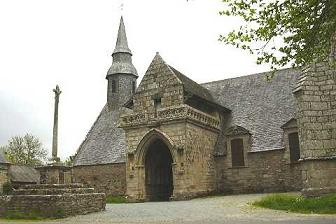
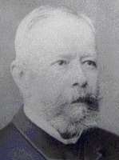
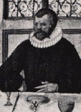
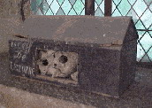

Le Chevalier Lez-Breizh
Knight Lez-Breizh
Dialecte de Cornouaille
|
Puis, de l'ensemble du cycle , dans le Barzhaz, 2ème édition, en 1845. Toutefois, - le "Départ" (partie I) parut en traduction, dès 1842, dans les "Contes populaires des anciens Bretons" de La Villemarqué, et - le "Retour" (partie II), également en traduction, en 1843, dans la "Revue de l'Armorique". Mais les "notes et éclaircissements", page 214, signalent l'existence d'autres poèmes du même cycle: - "Le Maure du roi" (IV) et - "L'ermite" (VI): nous apprenons que, devenu vieux, le héros se retira, auprès d'un vieil ermite, dans une grotte du bois du Rusquec , à l'extrémité de la paroisse de Loqueffret en Haute Cornouaille . Il y faisait pénitence et opérait même des miracles. "On" a montré à La Villemarqué, "une grotte en ruine qui passe pour avoir été l'ermitage des deux solitaires" . Le même "on" lui assura qu'il existait une ballade racontant la rencontre du moine et du page de Lez-Breizh, après un combat mais "on" n'a pu la lui chanter. Ces deux ballades apparaîtront dans l'édition de 1845. Avant que ne paraisse la seconde édition du Barzhaz (1845), l'auteur a fait une découverte. On lit dans le tome II de ses "Contes Populaires" (pp. 262-265), publiés en 1842, qu' "Une aventure semblable [à celles de Pérédur et Perceval] est attribuée par les poètes populaires armoricains au chef breton Morvan, surnommé Lez-Breiz (soutien de la Bretagne) qui vivait au IXéme siècle et a vaillamment défendu contre Louis le Débonnaire l'indépendance de son pays." Suit la traduction du "Départ" (I) dont il va être question, ainsi que de longs extraits modernisés du "Perceval" de Chrétien de Troyes, qui affirme-t-il avec aplomb "reproduit [quelques traits piquants de la ballade bretonne] presque littéralement: il a seulement le tort de leur ôter de leur grâce en les délayant et parfois de leur naturel en les exagérant" . Dans le le Barzahz de 1845, il propose désormais un long poème en six parties, dont la première, qu'il intitule "Le départ" (I), aurait été adaptée et affadie, par manque d'enracinement local de la légende, par l'auteur gallois de Peredur au XIème siècle, dans les Mabinogion nouvellement traduits par Lady Charlotte Guest (cf. Gwenc'hlan : l'attaque est la meilleure des défenses), puis plagiée dans le Perceval de Chrétien de Troyes un siècle plus tard! . Il recommence sa "démonstration" en s'en prenant, cette fois à la scène de la reconnaissance du frère et de la sœur, chez Chrétien de Troyes (en réalité Wauchier de Denain), qu'il met en parallèle avec son propre texte, intitulée "Le retour" (II). Les esprits méfiants verront dans "Peredur" et dans le "Perceval" de Chrétien de Troyes les sources principales du "Départ"(I) et du "Retour"(II), à moins qu'il ne s'agisse du "Lai de Tyolet", contemporain de "Perceva"l. Dans l'édition de 1845, nous apprenons enfin le nom du guide de Loqueffret: "Ce fragment (III) et quelques vers des autres [chants] me furent chantés, pour la première fois, par une vieille femme, appelée Marie Koateffer , qui habite au milieu du bois du Rusquec, dans la paroisse de Loqueffret. J’ai complété le poème au moyen de différentes versions dont je suis redevable à M. Victor Villiers de l’Isle-Adam , à M. de Penguern , à une paysanne de la paroisse de Trégourez, nommée Naïk de Follezou (Follezou est le nom d'un hameau de Trégourez), et à plusieurs autres habitants des montagnes d’Arrée." ( Cf. Klemmgan Itron Nizon ) Notons que dans la postface des "Contes populaires des anciens Bretons", p.316, 1842, il est question d'"un mendiant de Kergloff , près de Carhaix, en Basse Cornouaille." On peut retrouver la trace de Marie Koateffer: elle est nommée Marie Goadeffroy, fille de Jean et d'isabelle Kerever, lors de son baptême à Poullaouen en 1752, Marie Godefroy sur son acte de mariage avec Jean Tanguy en 1778 et Marie Goadeffen lors de son décès, le 29 avril 1842. Enfin dans les "notes" de l'édition de 1867, La Villemarqué indique que "Le chevalier du roi" (III) [lui] fut également appris "par une jeune et charmante femme, madame la comtesse de Cillart ." Parmi ses sources, il cite également Pol de Courcy , qui voyait en Lez-Breizh, le "Les Aubrays" évoqué dans le Barzhaz de 1839, mais passé sous silence dans celui de 1845. Si le "Départ" (I) se chante dans les Monts d'Arrée (Marie Koateffer), le "Retour" (II), ainsi que la légende de la mort en deux poèmes, "Le roi" (V) et "L'ermite" (VI) se chantent en Plévin (près de Carhaix), chants "authentifiés" par la citation in extenso qu'en fait Augustin Thierry dans ses "Dix ans d'études historiques", les deux autres chants seraient imputables aux bardes du Goëlo qui se seraient appropriés les exploits de Morvan au profit de leur héros local "Les Aubrais". C'est donc dans cette région que "Le chevalier du roi" (III) et "Le Maure du roi" (IV) sont le plus chantés. Dans le premier carnet, le chant Les fils Euret présente plusieurs passages qui rappellent le "Maure du roi". De même, p. 61 du même carnet on trouve un chant intitulé "Pennherez Koatelez" qui raconte les retrouvailles d'un frère et d'une sœur. Depuis que l’ensemble du public a accès aux trois carnets, on vérifie que l’essentiel des notes du carnet 2 a trait au « Chevalier du roi » et celles du carnet 3 à un court passage de « L’ermite » : - Carnet 2, pp. 52 à 55 : strophes 74-75, 105-117, 125, 128-131 : Lez-Breiz se prépare, les deux adversaires se saluent puis se défient. Les strophes 128-131, formule de lamentation et remerciements à Sainte-Anne ont été ajoutées à cette partie du poème en 1845; - pp. 217-218 : strophes 87-108 et 123 : promesse de don de Lez-Breiz à Sainte-Anne; - p. 220 : strophe 73 (introduction) et, fait exceptionnel, mélodie notée de la main de La Villemarqué. Chose encore plus étonnante: ce n'est pas celle du Barzhaz, mais, avec des différences sans doute involontaires, la variante de Friedrich Silcher , publiée avec harmonisation en décembre 1840, dans la traduction allemande de cet ouvrage fameux par A. Keller et E. von Seckendorff! - Carnet 3, p. 56 : strophes 251 et 255-258 : « L’Ermite, 1ère partie » : apparition de Sainte- Anne qui met fin à la pénitence de Lez-Breiz. On constate que La Villemarqué n’a pas exploité quatre passages du carnet 2 : - p. 52 : (a) Le page de Lez-Breiz dissuade son maître d’aller en Palestine où les Français ont la supériorité du nombre vis-à-vis des Bretons ("a zo trec’h mad d’ar Vretoned", une expression que l’on retrouve dans le manuscrit du « Cygne », mais non dans le texte du Barzhaz). Trois lignes plus bas le mot est noté « Goadestin ». Il s’agit peut-être d’un épisode inconnu des autres collecteurs qui s’est greffé sur un récit qui lui est logiquement étranger. - p. 53 : (b) L’adversaire de Lez-Breiz refuse de communiquer à celui-ci la lettre de mission qu’il a reçue du roi, refus accompagné d’une injure : « Lez-Breiz n’est qu’un âne ». - pp. 53-54 : (c) L’adversaire de Lez-Breiz, orthographié ici « Lezobré », propose un duel au premier sang ou limité à un seul échange de coups de feu. Le Breton exige un combat à mort (« buhez evit buhez »). Son adversaire lui recommande sa femme et ses enfants avant d’aller au combat qu’il sait perdu d’avance. L’invitation de Lez-Breiz à abandonner les manteaux, est le seul passage qui évoque « le Maure du roi ». Le lieu où le combat se déroule est devenu « Bourg-Prigent ». - p. 218 : (d) La demande de l’adversaire devenu dans cette variante le « Marquis Coatorgué » est formulée autrement, il va laisser douze fils orphelins à qui il convient d’envoyer sa chemise sanglante. La liste des chanteurs s’enrichit de 2 nouveaux noms, pour la variante notée pp. 217-218: - Louise Carré, de Kerlan , près de Kerauffret en Plouguernével et - Yves Brigon, du bourg de Lanrivain près de St-Nicolas-du-Belem. Une transcription KLT et des traductions sont proposées sur la page bretonne du présent chant. Deux autres versions, non recueillies par lui figurent dans le tome 2 des "Gwerzioù", paru en 1874. Elles sont intitulées respectivement "Le géant Lizandré" (p. 565) et "Le géant Les Aubrays" (P.573) C'est également sous le titre "Lezobre" qu'on les trouve, sous trois versions différentes, commençant toutes par "Etre Koat-ar-Skin ha Lezobre", dans le tome 91 des manuscrits de Penguern . Selon Luzel et Joseph Loth, cités (P. 389 de son "La Villemarqué") par Francis Gourvil qui se range à leur avis, hormis les parties III et IV ("Le chevalier du roi" et le "Maure du roi" qui sont des chants authentiques outrageusement arrangés), ce chant mythologique ferait partie de la catégorie des chants inventés . |
Then of the whole cycle , in "Barzhaz", 2nd Edition, in 1845. However, - the "Departure" (part I) was published in translation, as early as 1842, in "Contes populaires des anciens Bretons" by La Villemarqué, and - the "Return" (part II) appeared, also in translation, in 1843, in "Revue de l'Armorique". - The "King's Blackamoor" (IV) and, - The "Hermit" (VI). we read that, in his old days, the hero withdrew from society to live with an old monk in a cave, in the Rusquec wood pertaining to the parish Loqueffret in Upper Cornouaille . There he lived in penitence and even did miracles. "Someone" showed La Villemarqué "a ruined grotto considered as the dwelling of the two hermits". The same "somebody" told him of a ballad recounting Lez-Breizh's encounter with the monk after a fight, but could not sing it to him. These two ballads were to appear in the second 1845 edition. Previously to the 2nd edition of the Barzhaz (1845), the author had made a capital "discovery". We read in Book II of his "Folk tales" (pp. 262-265), published in 1842: "A similar [to that experienced by Peredur and Perceval] adventure is ascribed by Breton bards to Breton Chief Morvan, alias Lez-Breizh (the support of Brittany) who lived in the 9th century and gallantly fought for his homeland's independence against the French king Louis the Pious". Follows the translation of the "Departure (I), addressed hereafter, along with long modernized excerpts from "Perceval" by Chrétien de Troyes. The latter, so he states with audacity, records almost literally some outstanding features of the Breton ballad, but unfortunately deprives them of their charm by dragging them out, or of their naturalness by exaggerating them." In the 1845 Barzhaz, the ballad has grown to be a long poem in six parts, the first of which, titled "The departure" (I), is allegedly found, as a dull adaptation, due to its lack of local rooting interest, in the Welsh 11th poem Peredur , included in the Mabinogion, a MS collection, newly translated by Lady Charlotte Guest (cf. Gwenc'hlan : attack is the best defence), before it was plagiarized in Chrestien de Troyes' Perceval, a century later! La Villemarqué resumes his "demonstration" with an attack against the recognition scene between brother and sister, as handled by Chrestien (in fact, Wauchier de Denain), which he compares with his own text, part II, titled "The Return". Distrustful critics will see in Peredur and in Chrestien's Perceval the main sources for the "Departure" (I) and the "Return" (II), unless it were the "Lay of Tyolet" about as old as "Perceval". The 1845 edition informs us, moreover, of the name of the mysterious Loqueffret guide: "This fragment and a few verses of the other [songs] were sung to me, for the first time, by an old woman named Marie Koateffer , who lives in the middle of the wood of Rusquec, in the parish Loqueffret. I completed the poem by collating it with different versions contributed by M. Victor Villiers de l’Isle-Adam , by M. de Penguern , by songs I learnt from the singing of a country woman of the parish Trégourez, named Naïk de Follezou (Follezou is a hamlet in the same parish), and of several dwellers of the Mounts of Arrée." (Cf. Klemmgan Itron Nizon ) Be it noticed that the postface to the "Breton folk tales of old" p. 316, 1842, mentions, furthermore, a beggar from Kergloff , near Carhaix in Lower Cornouaille." The existence of Marie Koateffer is ascertained: she was named Marie Goadeffroy, daughter of Jean and isabelle Kerever, in the Poullaouen register of baptisms, in 1752; Marie Godefroy, when she married Jean Tanguy in 1778; and Marie Goadeffen, when she died, on 29th April 1842. In his "notes" to this song in the 1867 edition, La Villemarqué states that a version of "The King's knight" (III) was also contributed "by a charming young lady, the Countess de Cillart ." Among his sources he also quotes Pol de Courcy who considered that Lez-Breizh was the "Les Aubrays" already mentioned in 1839, but ignored in the 1845 edition. If the "Departure" (I) is sung in the Arrée Mounts (Marie Koateffer), the "Return" (II), as well as the lament in two parts for Lez-Breizh's death, "The King" (V) and "The Hermit" (VI) are sung, so he writes, in the Plevin (near Carhaix) area. The latter songs are authenticated by Augustin Thierry who quoted them in full in his "Ten years' historical studies". The other two songs, "The King's knight" (III) and "The King's Blackamoor" (IV) must be ascribed to bards of the Goelo (Lannion) area, who have vested their local hero, "Les Aubrays", with the feats of Morvan. Goelo is therefore the region where these two songs are most widely spread. In the first copybook, the song The sons of Euret has a few passages that remind of "The King's Blackamoor". Included in La Villemarqué's first collecting book, on page 61, is a song titled in pencil "Pennherez Koatelez" . The topic is the reunion of a brother and a sister after a long separation. Since the three notebooks have become accessible to everyone, we may satisfy ourselves that most of the notes in notebook 2 relate to the "Knight of the King" and those in notebook 3 to a short passage of "The Hermit" : - Notebook 2, pp. 52 to 55: stanzas 74-75, 105-117, 125, 128-131: Lez-Breiz is preparing for the fight, the two opponents greet and then challenge each other. Stanzas 128-131 (lamentation and thanks to St. Anne) were added to this part of the poem in 1845. - pp. 217-218: Verses 87-108 and 123 (pledge of donation from Lez-Breiz to Sainte-Anne). - p.220: stanza 73: Introduction with the only tune ever recorded by the hand of La Villemarqué. Even more surprisingly, it is not the tune printed in the Barzhaz, but, with perhaps unintended differences, the variant devised by Friedrich Silcher , which was published with harmonization in December 1840, in the German translation of this best selling book by A. Keller and E. von Seckendorff! - Notebook 3, p. 56: stanzas 251 and 255-258: "The Hermit, 1st part": appearance of St. Anne who puts an end to the penance of Lez-Breiz. It appears that La Villemarqué did not exploit four passages of the notebook 2: - p. 52: (a) Lez-Breiz is dissuaded by his page from going to Palestine where the French outnumber the Bretons ("a zo trec'h mad d'ar Vretoned", an expression found in the manuscript of the song "The Swan", but not in the printed text). Three lines further the same word is noted as "Goadestin". It may hint at an episode unknown to other collectors, here grafted onto a story that has no logical collection to it. - p. 53: (b) The opponent to Lez-Breiz refuses to let him read the letter of mission which he received from the King, refusal accompanied by an insult: "Lez-Breiz is but a donkey ". - pp. 53-54: (c) The opponent of Lez-Breiz, referred here to as "Lezobré", proposes a duel at the first blood or limited to a single exchange of shots. The Breton insists on a fight to death ("buhez evit buhez"). His opponent recommends him his wife and children before going to what he knows is a fight lost beforehand. Lez-Breiz 's invitation to strip off their coats is the only passage that evokes the part "the King's Moor". The town where the fight takes place has become "Bourg-Prigent", a place name which is not easy to pinpoint. - p. 218: (d) The request of the opponent who has become in this variant the "Marquis Coatorgué" is worded otherwise. He will leaves behind twelve orphaned sons to whom he requires Lez-Breiz to send his bloodstained shirt. The list of singers is enriched with 2 new names, for the variant noted pp. 217-218: - Louise Carré, from Kerlan , near Kerauffret in Plouguernével and - Yves Brigon, from the village Lanrivain near St-Nicolas-du-Belem. A KLT transcript and translations of these lyrics are available on the Breton page dedicated to this song. Two other versions, which were not collected by him are included in the 2nd book of the "Gwerzioù", published in 1874. They are title respectively "The Giant Lizandré" (p. 565) and "The Giant Les Aubrays" (P.573) Under the title "Lezobre" we find three different versions, all of them beginning with "Etre Koat-ar-Skin ha Lezobre", in the Book 91 of the de Penguern MSs. According to Luzel and Joseph Loth, quoted by Francis Gourvil (p. 389 of his "La Villemarqué"), this mythological song was " invented " by its alleged collector, except its parts III and IV, "The King's Knight" and "The King's Backamoor", two genuine folk songs that were excessively reshaped by their editor. |
Mélodie 1 (Barzhaz)
Mélodie 2 (modernisée)
(Sol majeur, Arrangts MIDI : Chr. Souchon)
| Français | English |
|---|---|
|
1. Chez sa mère, un jour, Lez-Breizh enfant Fut saisi d'un grand étonnement: 
2. Dans le bois s'avance un chevalier, En armure, de la tête aux pieds.
3. Et l'enfant que ce spectacle étonne Le prend pour Saint Michel en personne:
4. Il se jette à genoux. Le voilà Qui fait vite le signe de croix!
5. - Ne me faites, seigneur Saint Michel, Point violence pour l'amour du Ciel!
6. - Je ne suis pas cet archange saint, Non plus qu'un bandit de grand chemin.
7. Non pas saint Michel, en vérité Mais un chevalier ordonné.
8. - De chevaliers, je n'en ai jamais Ni vu, ni même entendu parler.
9. - Les chevaliers sont tous comme moi. Suis-je donc le premier que tu vois?
10. - Répondez d'abord: Qu'est donc ceci? A quoi, dites-moi, cela sert-il?
11. - Je blesse avec cela qui je veux: C'est ce que l'on appelle un épieu.
12. - J'ai bien mieux: j'ai mon bâton ferré Qu'on n'affronte point sans trépasser.
13. Et ce plat de cuivre à votre bras. A quoi vous sert-il, dites-le moi?
14. - Non pas un plat de cuivre, vois-tu, Mais ce que l'on appelle un écu.
15. - Seigneur chevalier, ne raillez pas Des écus (1), j'en vis plus d'une fois.
16. Un écu tiendrait dans votre main. Le votre clorait un four à pain.
17. Quel genre d'habit portez-vous donc? Il me semble plus lourd que le plomb!
18. - Cette cuirasse en fer me protège Des coups d'épée de mon adversaire.
19. - Si les cerfs étaient enharnachés Ainsi, nul ne pourrait les tuer.
20. Mais quant à vous, seigneur, dites-moi, Etes-vous donc né comme cela? -
21. Le vieux chevalier en l'entendant Partit d'un rire tonitruant.
22. - Qui diable vous a donc équipé, Dès lors qu'ainsi vous n'êtes point né?
23. - Celui qui de le faire a le droit, Cher enfant, c'est lui qui fit cela.
24. - Mais qui donc a le droit de le faire? - Nul, hormis le Comte de Quimper.
25. A toi de me répondre à présent: As- tu vu quelqu'un me ressemblant?
26. - Un homme comme vous par ici S'en vint. Il a pris ce chemin-ci. -
II 27. L'enfant rentra, courant comme un fou. Sa mère le prit sur ses genoux.
28. - Si vous saviez, ma mère chérie, Ce que je viens de voir aujourd'hui.
29. Je n'ai jamais rien vu d'aussi beau Que ce que je viens de voir tantôt:
30. Un homme plus beau que saint Michel L'archange au vitrail près de l'autel!
31. - Il n'est point d'homme plus beau pourtant Que les anges de Dieu, mon enfant.
32. - Pardonnez-moi, ma mère on en voit. Ils s'appellent chevaliers, je crois.
33. Les suivre, voilà ce que je veux Et devenir chevalier comme eux. -
34. La pauvre dame entendant cela, Sans connaissance tomba trois fois.
35. L'enfant Lez-Breizh, sans se retourner, Vers l'écurie s'est précipité.
36. Il y trouve un bien méchant cheval, Monte sur le dos de l'animal,
37. Et part s'enquérir du chevalier, Sans songer même à prendre congé.
38. Il quitte pour Quimper son château Rechercher ce chevalier si beau.
Note: [1] La Villemarqué traduit "gwennek" par "blanc" (ici "écu"). Il précise que le mot n'étant apparu qu'en 1350, "il s'agit peut-être de la monnaie appelée "keintoc" dans les lois galloises du dixième siècle". [2] En cliquant sur les cases "+", on affiche le passage du "Perceval" de Chrétien de Troyes correspondant à la strophe considérée (case "-":effacer) 
II LE RETOUR 39. Quand le chevalier Lez-Breizh revint Au manoir, il eut bien du chagrin. 40. Les dix ans qui s'étaient écoulés En avaient fait un fameux guerrier. 41. Le chevalier Lez-Breizh fut surpris En entrant dans la cour du logis: 42. Orties et ronces à profusion Jusque sur le seuil de la maison, 43. Et les murs effondrés à moitié Que le lierre achève de cacher. 44. Au sieur Lez-Breizh qui veut s'introduire Une vieille aveugle vient ouvrir. 45. - O Grand'mère, trouverai-je ici L'hospitalité pour une nuit? 46. - L'hospitalité, bien volontiers, Oui, mais en toute simplicité. 47. Ici tout part à vau-l'eau depuis Qu'un caprice a fait partir le fils. - 48. A peine avait-elle terminé Qu'une demoiselle est arrivée.
49. Et lorsqu'elle le voit, aussitôt, La jeune fille éclate en sanglots.
50. - Dites-moi, demoiselle, pourquoi Devrait-on pleurer lorsqu'on me voit?
51. - Volontiers je vous dirai, seigneur Chevalier, la cause de mes pleurs:
52. Mon frère du même âge que vous Partit, il y a dix ans de chez nous.
53. Pour mener la vie de chevalier. Lorsque j'en vois un, je dois pleurer.
54. Oui, la malheureuse que je suis Pleure aussitôt en pensant à lui.
55. - D'autre frère n'en avez-vous pas? Ni de mère, enfant, dites-le moi.
56. - D'autre frère? Non, point ici-bas. Au ciel j'en ai pourtant, croyez-moi.
57. Ma mère y est. Si bien que ce toit N'abrite que ma nourrice et moi.
58. Notre mère est morte de chagrin Quand mon frère s'en fut, je crois bien.
59. Près de la porte, voyez son lit! Et son fauteuil près de l'âtre aussi. 60. J'ai sa croix bénite sur mon coeur Pour le consoler de ses malheurs. - 61. Le seigneur Lez-Breizh alors se prit A gémir, si bien qu'elle s'enquit:
62. - Votre mère, est-elle morte aussi, Que je vous fasse pleurer ainsi? 63. - Oui, ma mère aussi s'en est allée. Et c'est moi-même qui l'ai tuée! 64. - Juste ciel, si vous fîtes cela, Qui donc êtes-vous? Dites-le moi.
65. - Morvan, fils de Konan est mon nom, Ma sœur, et Lez-Breizh est mon surnom. -
66. Un instant la pauvre demeura Interdite, immobile et sans voix.
67. Au point même qu'elle crut d'abord Qu'elle était sur le seuil de la mort.
68. Jusqu'à ce qu'il passa ses deux bras Autour de son cou et l'embrassa.
69. Sur la bouche et qu'elle l'étreignit Et de ses pleurs elle le couvrit.
70. - Dieu qui t'avait éloigné de moi T'as ramené vers moi, cette fois!
71. Mon frère que ce Dieu soit loué Qui de mon chagrin a pris pitié. - Note: [1] En cliquant sur les cases "+", on affiche le passage du "Cont. Perceval" de Wauchier correspondant à la strophe considérée (case "-":effacer)
III LE CHEVALIER DU ROI [1] Traduction d'Auguste Briseux (Vers de 10 pieds) I 72. Entre deux seigneurs, un Frank [2], un Breton, S'apprête un combat, combat de renom. 73. Du pays breton Lez-Breizh est l'appui, Que Dieu le soutienne et marche avec lui! - 74. Le seigneur Lez-Breizh, le bon chevalier, Eveille un matin son jeune écuyer: 75. - Page, éveille-toi, car le ciel est clair; Page, apprête-moi mon casque de fer. 76. - Ma lance d'acier, il faut la fourbir, Dans le corps des Franks je veux la rougir. 77. Avec l'aide de Dieu, mes deux bras Les brandiront encore une fois! 78. - Maître, vous avez mon coeur et ma foi. A cette rencontre irez-vous sans moi? 79. - Que dirait ta mère, enfant sans raison, Si je revenais seul vers sa maison? 80. Si ton corps restait au milieu des morts, Ta mère viendrait mourir sur ton corps. 81. - Maître, au nom du Ciel, maître, parlez bas, Et marchons tous deux à vos grands combats. 82. Moi, des guerriers franks, je n'ai nulle peur: Dur est mon acier et dur est mon coeur. 83. Et quand même cela déplairait, Où vous irez, moi-même j'irai 84. Maître où vous irez, avec vous j'irai. Où vous combattrez, moi je combattrai. - II 85. Le seigneur Lez-Breizh, des Bretons l'appui, Allait au combat, son page avec lui. 86. Passant à l'Armor, tout près du saint lieu, Il voulut entrer et prier un peu: 87. - Quand je vins chez vous, sainte Anne d'Armor, La première fois, j'étais jeune encor. 88. Avais-je vingt ans? Je ne le crois pas. Pourtant j'avais vu plus de vingt combats, 89. Combats où mon bras fit bien son devoir, Mais gagnés surtout par votre pouvoir. 90. Si dans mon pays sans mal je reviens, Mère, vous aurez part dans tous mes biens. 91. Un cordon de cire épais de trois doigts [3] Autour de vos murs tournera trois fois. 92. Dame, vous aurez, pour prix de mes jours, Robe de brocart, manteau de velours. 93. Vous aurez aussi bannière en satin Avec un support d'ivoire et d'étain. 94. Sept cloches d'argent sur votre beau front, Le jour et la nuit gaîment sonneront. 95. Puis j'irai trois fois remplir à genoux Votre bénitier: Mère, entendez-vous? 96. - Chevalier Lez-Breizh, va combattre, va! Ton rival est fort, mais je serai là. - III 97. - J'aperçois Lez-Breizh, suivi de ses gens, Bataillon nombreux, armé jusqu'aux dents. 98. Bon! un âne [4] blanc est son destrier Beau licol de chanvre et même étrier. 99. Il a pour escorte un page, un enfant: Mais ce nain, dit-on, vaut presque un géant. 100. L'écuyer de Lez-Breizh les voyant Tout contre lui se serre en tremblant. 101. - J'aperçois Lorgnèz suivi de ses gens, Bataillon nombreux, armé jusqu'aux dents. 102. J'aperçois Lorgnèz, tout cuirassé d'or. Ils sont dix et dix, dix autres encor. 103. - Maître, les voilà près du châtaignier. Contre eux nous aurons grand peine à gagner. 104. - Quand j'aurai sur eux étendu mon bras, Alors sur le pré tu les compteras. 105. Que ton bouclier sur mon bouclier Sonne! puis marchons, mon jeune écuyer. - IV 106. - Hé! bonjour à toi, chevalier Lez-Breizh! - Hé! bonjour à toi, chevalier Lorgnez! 107. - Es-tu donc venu seul au combat? - Non, j'ai toujours quelqu'un avec moi. 108. Au combat, jamais seul je ne viens: Sainte Anne m'apporte son soutien. 109. - Par l'ordre du roi, mon prince et seigneur, Je viens t'arracher la vie et l'honneur. 110. - Chevalier Lorgnèz, retourne à ton roi: De lui j'ai souci tout comme de toi. 111. De lui je ne suis pas plus inquiet Que de toi, des tiens, de ton épée. 112. Retourne à Paris, il est temps encor, Montrer dans les bals, ta cuirasse d'or. 113. Sinon, chevalier, je rendrai ton sang Froid comme la pierre ou l'eau de l'étang. 114. - Chevalier Lez-Breizh, au fond de quel bois As-tu vu le jour, chevalier courtois? 115. Mon dernier valet, hobereau si fier Fera bien sauter ton casque de fer. - 116. A ces mots, Lez-Breizh tira vers le ciel Son glaive d'acier, comme saint Michel. 117. - Le nom de mon père, on ne le sait pas? Eh bien, moi, son fils, tu me connaîtras! - V 118. L'ermite du bois ainsi parlait Sur son seuil au petit écuyer: 119- Page, où courez-vous à travers le champ? Vos bras sont couverts de fange et de sang. 120. Dans mon ermitage il vous faut laver. - Je cherche une source, où donc la trouver? 121. Ni repos, ni de quoi se laver: Une source où se désaltérer. 122. Je cherche de l'eau pour mon doux seigneur Brisé de fatigue et tout en sueur. 123. Treize combattants tombés sous ses coups! L'insolent Lorgnèz le premier de tous. 124. Treize autres guerriers sont tombés sous moi, Et le reste a fui tout pâle d'effroi. - VI 125. Il n'eût pas été Breton dans son coeur Qui n'aurait point rit d'un rire vainqueur, 126. A voir les gazons en mai reverdis Tout rouges du sang de ces Franks maudits. 127. Lez-Breizh sur leurs corps s'en vient s'accouder Et se délassait à les regarder. 128. Il n'eût pas été chrétien dans son coeur Qui n'eût, ce soir-là, pleuré de bonheur, 129. En voyant Lez-Breizh seul agenouillé, Devant lui l'autel de larmes mouillé, 130. En voyant Lez-Breizh sur ses deux genoux, Lui guerrier si fier et chrétien si doux: 131. -O mère sainte Anne, o reine d'Armor, Pour moi dans ce jour vous étiez encor! (131. ) Voyez à vos pieds votre serviteur: A vous la victoire, à vous tout l'honneur! - VII 132. Pour le souvenir d'un combat si grand, Un barde guerrier a rimé ce chant: 133. Que dans l'avenir il soit répété! Que ton nom, Lez-Breizh, partout soit chanté! 134. Allez donc, mes vers, dans tous les cantons Et semez la joie aux coeurs des Bretons! Notes: [1] La Villemarqué se félicite que ce soit Auguste Briseux, "un poète breton et français de notre temps" qui ait traduit le "Chevalier du Roi" (III) " [publié dans le Barzhaz de 1839] sans lui ôter son caractère et son originalité" . Il est amusant de noter que, dans l'édition de 1867, la phrase devient "un poète français et breton..." ! [2] A propos du mot "Frank", ainsi orthogaphié, cf. "Le Vin des Gaulois" [3] Cet ex-voto semi-magique est évoqué dans de nombreuses complaintes, par exemple, "La Peste d'Elliant . Il fait toujours trois fois le tour d'un lieu consacré, ici non seulement la muraille, mais aussi l'église, le cimetière et la terre consacrée à Sainte Anne (qui ont disparu dans la traduction de Briseux!) [4] Dans les versions collectées par Luzel et de Penguern (ex Lézobré - version 1), il est bien question d'âne , mais c'est une injure. Est-ce La Villemarqué qui a opéré cette métamorphose?
IV LE MAURE DU ROI I 135. Le roi des Franks un beau jour a dit Aux seigneurs de sa cour ce qui suit: 136. - Celui par qui Lez-Breizh périra Rendra vraiment hommage à son roi. 137. Il ne cesse de me contester Et de trucider mes chevaliers. - 138. Le Maure du roi qui l'entendit Se leva puis s'avança vers lui: 139. - Seigneur, tu connais la loyauté Dont j'ai preuve par le passé. 140. Mais si tu le désire aujourd'hui, Lez-Breizh en sera la garantie. 141. Je te ferai porter dès demain Sa tête, ou la mienne, sans chagrin. - II 142. Le lendemain, le jeune écuyer De Lez-Breizh tout tremblant accourait: 143. - Le Maure du Roi était ici. Il vient de vous lancer un défi. 144. - Si tant est qu'il me lance un défi Il faut que je me batte avec lui. 145. - Il use, ne le savez-vous pas, De sortilèges lorsqu'il combat. 146. - S'il use des charmes du démon, Pour que Dieu nous aide nous prierons! 147. Equipe mon cheval noir, et moi Je m'en vais revêtir mon harnois. 148. - Monseigneur, ne le prenez point mal: Laissez donc ici votre cheval! 149. Il y a dans l'écurie du roi Trois chevaux: prenez-en un des trois. 150. Et maintenant, si vous m'écoutez, Je m'en vais vous apprendre un secret. 151. Un secret que d'un vieux clerc je tiens Un homme de Dieu, s'il en fut un: 152. Vous ne prendrez pas le cheval bai, Le cheval blanc non plus, s'il vous plait. 153. Vous ne prendrez pas le cheval blanc. Mais le cheval noir uniquement. 154. Celui-là se trouve au milieu. C'est Le Maure du roi qui l'a dompté. 155. Vous prendrez celui-là, croyez-moi, Avec lui vous irez au combat. 156. En entrant dans la salle, le Maure Jettera son manteau sur le sol. 157. Vous, d'en faire autant, gardez-vous bien, Jetez votre manteau sur le sien. 158. Sa force, vos effets sous les siens, Redoublerait pour le Sarrasin. 159. Faites, quand il vous abordera, De votre lance un signe de croix. 160. Puis quand il fondra sur vous, furieux, Vous le recevrez avec l'épieu. 161. Qui grâce à la force de vos bras Et la Trinité ne rompra pas. - III 162. Et son épieu ne s'est pas brisé Avec l'aide de la Trinité! 163. Sa lance en sa main n'a point tremblé Quand l'un sur l'autre ils se sont rués. 164. Lorsqu'en selle ils opposent tous deux La rage aveugle de leurs épieux, 165. La rage aveugle de leurs coursiers, Qui cherchent à s'entredéchirer 166. Le roi franc, sur son trône juché, De ses dignitaires entouré, 167. Prodiguait ses encouragements: - Sus à ce merle, noir cormoran! - 168. L'ogre fondait sur Lez-Breizh, violent Comme sur le vaisseau, l'ouragan. 169. L'épieu du Breton ne trembla pas. Mais celui du Maure se brisa. 170. Lez-Breizh le fit voler en éclats. Son adversaire il le démonta. 171. Et lorsqu'ils sont à pied, tous les deux, Ils fondent l'un sur l'autre, furieux. 172. S'administrant de tels coups d'épée Que les murs d'épouvante suintaient. 173. Les éclairs que leurs armes allument Rougeoient comme le fer sur l'enclume. 174. Jusqu'à ce que le Breton enfonce Par le joint son fer au coeur du monstre. 175. Le Maure du Roi soudain s'affale Sa tête rebondit sur la dalle. 176. Et Lez-Breizh le voyant terrassé, Sur le ventre lui posa le pied. 177. Puis il dégagea sa longue épée: La tête du Maure en fut tranchée. 178. Le Breton s'en saisit et bientôt On voit la tête orner le pommeau 179. De sa selle auquel il l'a fixée Par la barbe aux longs poils gris, tressée. 180. Voyant sa lame rougie de sang Il la jeta loin de lui, disant: 181. - Je jette cette épée loin de moi, Souillée du sang du Maure du roi! - 182. Il monte sur son fringant coursier Et part, suivi de son écuyer. 183. Lorsque sa course fut achevée, Il détacha son hideux trophée. 184. Puis il le suspendit à son huis Afin que chaque Breton le vît. 185. Cette horrible peau noire où l'on voit Luire ces dents blanches, quel effroi 186. Pour ceux qui passaient et regardaient Cette bouche ouverte qui bâillait! (1) 187. Plus d'un cavalier dit l'avisant: - Le seigneur Lez-Breizh est bien vaillant! - 188. Et le seigneur Lez-Breizh s'écria: - Voyez: j'ai pris part à vingt combats, 189. Au cour desquels ont été, je crois Plus de mille hommes vaincus par moi; 190. Mais jamais je n'eus autant, encore, De mal que m'en a donné ce Maure! 191. Ce nouveau miracle, je le dois A Sainte Anne, une mère pour moi 192. Une église lui sera bâtie Entre le Léguer et le Guindy! - (2) Notes: (1) La Villemarqué croit bon de préciser: "La vue de la tête coupée de leur ennemi devait moins effrayer que réjouir les Bretons. Il est donc probable que l'original portait heluz (?) , agréable, au lieu d' euzhus (horrible) et laouenne (réjouissait) au lieu de sponte (effrayait)." (2) Il ne s'agit donc pas de Sainte Anne d'Auray!
IV (=V) LE ROI 193. Lez-Breizh un jour dirigeait ses pas Vers l'ouest, à l'encontre du roi, 194. Affrontant l'adversaire royal Avec cinq mille hommes à cheval. 195. Or, étant sur le point de partir, Il entend la foudre retentir. 196. Son jeune écuyer, voyant cela, Rien de bon pour lui n'en augura. 197. - Maître, au nom du ciel, restez chez vous: Ce jour s'annonce mauvais pour nous! 198. - Rester chez nous, écuyer, ça non, J'en ai donné l'ordre, nous partons! 199. Tant qu'en mon sein la vie brûlera, Ma marche ne s'interrompra pas. 200. Le coeur du roi d'Arcoat (1) doit d'abord Sous mon talon attendre la mort. - 201. La sœur de Lez-Breizh, le regard fou, Saisit son cheval par le licou: 202. - Mon cher frère, je vous en supplie N'allez pas au combat aujourd'hui. 203. Car ce serait aller à la mort! Et que deviendrions nous alors? 204. Je vois sur la rive un cheval blanc De mer (2) qu'enlace un hideux serpent: 205. A l'arrière il fait deux noeuds puissants; Et trois autres autour de ses flancs, 206. Deux autres autour du train avant L'étouffant de son souffle brûlant. 207. Le pauvre cheval de se cabrer, D'incliner le chef pour l'égorger. 208. L'autre bâille, agite un dard sanglant Déroule ses anneaux en sifflant. 209. Ses petits l'entendent, ils accourent. Fuis: même seul tu es sauf toujours! 210 - Qu'il y ait des Franks encor et encor: Je ne fuirai pas devant la mort! - 211. Il n'avait pas fini de parler Qu'il était déjà fort éloigné... Notes: (1) "Arcoat" (la forêt), désigne ici, selon La Villemarqué, "la France, par opposition aux côtes de l'Armorique". (2) Le cheval de mer désigne les Bretons et leur chef comme dans "la Prophétie de Gwenc'hlan" .
V (=VI) L'ERMITE I 212. L'ermite au Bois d'Helléan (1) entendit Trois coups frappés à son huis, la nuit. 213. - Bon ermite, ouvrez-moi, s'il vous plaît, Je cherche un asile où me cacher. 214. Il vient du pays franc un vent froid. Gibier et bétail se tiennent cois. 215. Il vient un vent âpre de la mer. Demeurer dehors est bien amer. 216. - Mais qui donc ainsi frappe à mon huis Et voudrait entrer, passé minuit? 217. - La Bretagne me connaissait bien: Dans la peine, j'étais son "Soutien"! 218. - A Lez-Breizh je n'ouvrirai jamais. C'est un agitateur, on le sait. 219. Un fauteur de troubles, m'a-t-on dit, Qui s'oppose à notre roi béni. 220. - Séditieux? Moi? Non, Dieu m'est témoin! Et sinon, un traître encor bien moins! 221. Je maudis les traîtres de tout coeur, Et les Franks et leur roi de malheur! 222. Ils bavent, tels des chiens enragés Ou des condamnés sur le bûcher! 223. Je maudis les traîtres de tout coeur: Sans lesquels j'aurais été vainqueur. 224. - De maudire jamais garde-toi Amis, ennemis, qui que ce soit! 225. Surtout pas notre roi, malheureux, Puisque notre roi est l'Oint de Dieu! 226. - Lui? L'Oint de Dieu? Je ne le crois pas Bien plutôt l'oint du diable, ma foi! 227. Oint de Dieu ne saurait être qui Ravage la terre en ce pays. 228. Mais ce qui est du diable bientôt Y retourne ferrer ses sabots. 229. Les sabots du "Vieux Paul" (2) et pourtant Il est déferré à tout moment. 230. Vieil ermite, ouvrez-moi donc, que j'aie Une pierre pour me reposer! 231. - Ma porte vous restera fermée. Ou l'ire des Franks m'est assurée. 232. - Ermite, ouvrez la porte, sinon Je vais la jeter dans la maison! - 233. Le vieil ermite, entendant ceci, S'est précipité hors de son lit. 234. Muni d'un bout d'écorce enflammé Il s'en fut ouvrir à l'étranger. 235. Il ouvre la porte. Ce qu'il voit Le fait reculer, rempli d'effroi. 236. Il voit vers lui s'avancer un spectre Tenant entre ses deux mains sa tête 237. Dont les yeux pleins de sang et de feu Tournoyaient. Ah, quel spectacle affreux! 238. - Silence, vieux chrétien, n'aie pas peur! Ceci n'est que l'oeuvre du Seigneur, 239. Lequel permit, semble-t-il, aux Franks De me décapiter pour un temps. 240. Un prodige vous échoit pourtant: Remettre en place le chef manquant. 241. Parce que je fus compatissant Envers mes sujets, de mon vivant, 242. - Si c'est bien la volonté de Dieu De te ressusciter, si je veux, 243. Parce que tu fus compatissant Envers tes sujets de ton vivant, 244. Ta tête soit replacée, mon fils! Par le Père, le Fils et l'Esprit! - 245. Et par la vertu de l'eau bénite, Il fut fait comme l'a dit l'ermite. 246. Une fois disparu le fantôme, L'ermite ainsi s'adressait à l'homme: 247. - Tu feras pénitence à présent, Avec moi, pénitence vraiment. 248. Une haire de plomb, sept années, Tu porteras à ton cou fixée. 249. Allant chaque midi et à jeun Quérir de l'eau en haut du ravin. 250. - Qu'il soit fait selon ta volonté. Et je ne veux que m'y conformer. - 251. Lorsque les sept ans enfin passèrent, Les talons écorchés par la haire, 252. La barbe grise et les cheveux blancs Jusques à la ceinture tombant, 253. Et l'on eût dit quelque chêne mort Depuis sept années ou plus encor. 254. Quiconque dans cet état l'eût vu A coup sur ne l'eût pas reconnu. 255. A part une dame aux blancs atours Qui dans le bois vert passait un jour. 256. Elle le vit et versa des pleurs: - Lez-Breizh, cher fils, c'est toi, quel bonheur! 257. Viens vers ta mère, enfant, viens vers moi Que je te soulage de ce poids. 258. Que je coupe avec mes ciseaux d'or Ta chaîne, moi, Sainte Anne d'Armor. - II 259. Cela faisait sept ans et un mois Que son écuyer battait les bois, 260. A sa recherche et allait disant, En passant par le bois d'Helléan: 261. - Même si j'ai tué le misérable Qui l'a tué, Lez-Breizh reste introuvable. - 262. Voilà qu'au bout du bois, il entend Un cheval hennir plaintivement. 263. Et le sien mettant le nez au vent, Y répondit en caracolant. 264. Lorsqu'il arrive au bout de ce bois, C'est le cheval de Lez-Breizh qu'il voit. 265. Tête baissée, près de la fontaine, Il ne boit pas et il paît à peine. 266. Il flaire seulement l'herbe verte Qu'avec ses sabots il a ouverte. 267. Puis il lève la tête. On l'entend Pousser un lugubre hennissement. 268. Un lugubre hennissement encor. D'autres diraient qu'il hurle à la mort. 269. - Près le la source qu'y a-t-il donc, Vieil homme? Qui dort sous ce buisson? 270. - C'est Lez-Breizh qui repose en ce lieu, En Bretagne à tout jamais fameux. 271. Il va s'éveiller dans un instant, S'éveiller en criant: "Sus aux Franks!" - Notes (1) Une partie de l'ancienne forêt de Brocéliande, selon La Villemarqué. (2) Le "Vieux Paul" désigne le diable. L'expression équivaut au proverbe: "Bien mal acquis ne profite jamais." Traduction: Ch. Souchon (c) 2009 (Sauf texte de Briseux) |
1. At his mother's once the child Lez-Breizh Was glued to the spot with great surprise: 2. A knight was issuing from the wood, Who was riding, armed from head to foot.
3. Child Lez-Breizh, when he saw him approach, Thought it was Saint Michael on his horse.
4. Lez-Breizh fell on his knees and he made The sign of the cross quickly and said:
5. - Lord Saint Michael, in God's name I pray You not to harm me in any way! 6. - I am not Lord Saint Michael, be sure, Nor a highwayman gone on a tour. 7. Lord Saint Michael I am by no way. But a dubbed knight, you may well say. 8. - That I never saw knights I avow. Nor did I hear of them until now.
9. - A knight looks like me. Now, come and see. Did you see one pass by? Please, tell me?
10. - To me your own secrets first unfold. What's the use of that odd thing you hold?
11. - With that shaft I may hurt whom I choose. It is called a lance, can kill or bruise.
12. - My own cudgel is a good arm, too. Don't oppose it or it shall kill you. 13. What's the use of this platter of brass? Why hang on your arm this cumbrous mass?
14. - Child, this is no brass platter at all "Ecu" (1) or "targe" that is what it's called. 15. Lord knight, please of me don't you make fun. More than once I saw those "ecu" coins. 16. Now, I held them in my hand, I did. This one is large as an oven lid. 17. And what kind of garment do you wear? As heavy, as iron, I should swear! 18. - It's a breast-plate of iron, my lad. To protect me from spear or sword stab. 19. - If deer were protected the same way, Hunting were not such unequal fray! 20. But as for you, lord, would you tell me, Were you born thus, all in panoply? 21. The old knight, at these words tried in vain An outburst of laughter to restrain. 22. - If you were not born with that bizarre Rig-out who has clad you as you are? 23. - The one who has a right to do so. Boy, belted me, a long time ago. 24. - But who may possess a right so rare? - No one but the lord Count of Quimper. 25. Now, lad, your turn to speak: did you spy A man clothed like me, passing by? 26. - A man like you, my lord? I saw one. And this is the way that he has gone. -
II 27. Having run home in haste the young chap Chattered, sitting on his mother's lap: 28. - I must tell you, I can wait no more: Such bearing I never saw before! 29. Never did I such fair bearing see, Or such martial grace and gallantry!. 30. Like the lord Saint Michael was he fair, The Archangel in our house of prayer. 31. - Of all human beings none may vie, none, With God's angels, don't you know, my son? 32. - Mother I am sorry to gainsay: There are some: they're called knights, so they say.
33. As for me, I want with them to go, To be a knight and fight as they do. - 34. The poor dame who had lost her husband, Three times unconscious sank to the ground. 35. Without looking back, Lez-Breizh, the child Entered the horse-stables, rash and wild.
36. There, the first nag he could get hold of He jumped on its back and he went off,
37. Chasing after the beautiful knight. Off he was and without a goodbye,
38. Chasing after him towards Quimper, Leaving behind his ancestors' lair.
Note: [1] La Villemarqué translates "gwennek" as "blank" (here "écu"). He adds that since the word first appears in 1350, "it could replace here the word "keintoc" which referred to a coin in 10th century Welsh Laws". [2] Click the boxes "+", to display the excerpt from "Peredur", the Welsh tale , corresponding with each stanza (click box "-" to hide it)
II THE RETURN 39. Knight Lez-Breizh was by the sight most stunned, To his mother's home when he returned: 40. After full ten years, back home again, And well-known among all fighting men, 41. At the sight, knight Lez-Breizh wondered When the house's yard he entered: 42. Bramble bushes and nettle that throve Round the very threshold of the house; 43. Half-dilapidated walls that were Covered with wild ivy everywhere; 44. He was about admittance to claim When to the door an old blind wife came. 45. - Grandmother, he said, would you give me For the night your hospitality? 46. - Hospitality, sir, we'll give you But not as to the lord knight is due. 47. Made to go to ruin was this home Since its son and heir left it to roam. - 48. She had not ceased speaking, when a young Girl was heard on the steps, coming down. 49. For a moment the girl looked at him Then she burst into profuse crying. 50. - How now, maiden, tell me, Lez-Breizh said, What's the reason for the tears you shed? 51. - Sir knight, I shall tell you willingly Why I cry and what happened to me. 52. My brother about your age has left Us, ten years ago, to ride and fence. 53. So, every time that I see a knight Sir, I see myself compelled to cry. 54. Nothing could my emotion abate, Thinking of my brother's woeful fate. 55. - Charming damsel, have you, he asked her, Other brothers, have you a mother? 56. - Other brothers in this world? I've none. All of them to Heaven they have gone. 57. My mother is there, too. As you see: No one's left but my old nurse and me. 58. My mother has died of grief when my Brother rode off to become a knight. 59. Next to the door you may see his bed. The chair by the hearth: that's where he stayed. 60. I keep his holy cross on my skin: My only solace through thick and thin. - 61. The lord Lez-Breizh gave so loud a sigh That the girl asked him after a while: 62. - Your own mother, what of her? Is she Dead, that you cry, when listening to me? 63. - Yes, she too is gone. It's as you say. Her who gave me birth, wretch, I did slay! 64. - In the name of Heaven, she exclaimed, Who are you? Sir Knight, Who are you named? 65. - I am Morvan. Conan was my sire. And my nickname, sister, is Lez-Breizh! - 66. The young girl stared at him for a while Was speechless, could neither weep nor smile. 67. So dumbfounded was she that she thought She would not recover from the shock. 68. Till her arms round his neck came to rest, Her little mouth on his lips was pressed. 69. While she hugged him tight in her arms She bathed him in tears, profuse and warm. 70. - God who kept you long away from me. Brought you back, that near me you should be! 71. God be praised, my brother so long-lost, My cries could not His pity exhaust! Note: [1] Click the boxes "+", to display the excerpt from "Cont. Perceval" by Wauchier corresponding with each stanza (click box "-" to hide it)
III THE KING'S KNIGHT (The French translation was composed by Auguste Briseux in 10 syllable verse) [1] 72. Between Knight Lorgnez and Knight Lez-Breizh A regular combat was arranged. 73. May God help Lez-Breizh to overcome! God give good news to all those at home! 74. This has caused the lord Lez-Breizh to say, To his faithful young squire one day: 75. - Quick, arouse, my squire, upon my word, It's time for you to furbish my sword! 76. That, with helmet, spear and lance, I may Redden it in Frankish [2] blood today. 77. With the help of God I shall carry Slaughter into their ranks presently! 78 - Tell me, asked the squire, Lord, if I might Follow you and partake in the fight! 79. - Say, what if you never returned, lad? Wouldn't your poor mother be so sad? 80. What if in a pool of blood you die? Who could soothe her pain and dry her eyes? 81. - In God's name, said the boy to the knight. If you love me, you will let me fight! 82. For of the Franks I am not afraid. Hard is my heart and sharp is my blade. 83. Whether they find fault or not with me Wherever you are, I want to be! 84. Wherever you are, I shall be too. Wherever you fight, I'll fight with you! - II 85. Lez-Breizh rode out to battle that day. He was with his young squire on the way. 86. As they passed near blessed Saint Anne's church, They stopped and the knight entered the porch. 87. - Saint Anne, I was young, holy Lady, When I came with my first entreaty. 88. I am not yet twenty years old, though, I have been in twenty fights or so. 89. All of them we've gained and they all said, That it was, saint Lady, by your aid. 90. If I return to this land again, I shall make you a rich gift, Saint Anne. 91. I shall give you a thick cord of wax [3] To go thrice around your walled precincts, 92. Thrice round your church, thrice round your churchyard, Thrice around your land, as your reward. 93. And a banner of velvet and of White satin with an ivory staff. 94. Seven bells of silver will be made To ring night and day above your head. 95. Thrice a day on my knees I'll be wont To draw water to refill your font. 96. - O knight Lez-Breizh, go, keep on your way! I accompany you to the fray! - III 97. - Listen! Morvan Lez-Breizh coming in, Surely well-equipped, a host with him! 98. A small ass [4] with a halter of hemp He mounts to signify his contempt! 99. His squire makes up his whole retinue. But they say he's a frightful man, too. - 100. His young squire when he saw them loom up Squeezed up against his master at first. 101. - Do you see? It's Lorgnez drawing near With a troop of warriors in the rear! 102. With another troop marching in front: Ten by ten they come, as is their wont. 103. Look, now they have reached the Chestnut wood Match them may only true men and good! 104. - You shall see how many are still here Once they've tasted the steel of my spear. 105. Now, hit your sword, knight, against my sword. Now, to confront them let us come forth. - IV 106. - Ho! Good day to you, seigneur Lez-Breizh! - Ho! Good day to you, seigneur Lorgnez! 107. - To a single combat did you come? - Be not mistaken, I'm not alone. 108. I am not alone, that is not right: For Saint Anne assists me in the fight. 109. - As for me, by order of my King, I'll take your life, this morning first thing. 110. - Return to your king! I thought he knew: I mock him as much as I mock you. 111. I laugh at you, I laugh at your sword I laugh at your king, laugh at his horde. 112. Return to Paris, back to your wife. Don your golden clothes and cease from strife, 113. Or else I shall cause your blood to freeze As hard as winter frost on the trees. 114. - Knight Lez-Breizh, out of what wood, tell me Were you made? You speak so saucily! 115. But the lowest varlet in my horde Shall hew your casque from your head, my lord! - 116. Morvan Lez-Breizh was seen by this word Drawing from its scabbard his great sword: 117. - Didn't you know my father, perchance? Now, you shall make his son's acquaintance! - V 118. The old hermit of the wood has told To brave Lez-Breizh' squire on his threshold: 119. - Say, why do you hurry through the wood? Your armour is stained with mud and blood? 120. To my hermitage your way you found: Repose for a little, wash your wounds. 121. - Not to rest or wash I need water But to take it to my young master. 122. That's why I am in search of a source. He has fallen and loses his force. 123. Thirty warriors lie, by his hand slain. The knight Lorgnez was the first of them. 124. I slew myself of them a good deal. And the rest have taken to their heels. VI 125. Breton in his heart would not have been Whoever was not compelled to grin, 126. On seeing the green meadow reddened all By the blood of the Franks brought to fall. 127. To Lez-Breizh who had made such effort The sight of them was a great comfort. 128. No true Christian heart could have refrained From crying in the Church of Saint Anne, 129. Seeing the church awash with all the tears With which his eyes were overflowing. 130. Lez-Breizh crying, on his knees, warmly Thanked the Patron Saint of Brittany. 131. - Praise be to you, our mother, Saint Anne For no other than you this fight gained! - VII 132. This song was made to keep memory Of this unusual victory. 133. Let it be sung as a true record Of the feats of Lez-Breizh, the good lord. 134. May this strain for miles around be sung To rejoice the heart of each Breton! Note: [1] La Villemarqué is very pleased that it was Auguste Briseux, "a Breton and French poet of our time" who translated the "King's knight" (III), "without depriving it of its specific character". Curiously the same sentence in the 1867 edition becomes "a French and Breton poet..." [2] Concerning the spelling "Frank" in the French text, see "The Wine of the Gauls" [3] This semi-magic ex-voto appears in many a song (e.g. "Plague of Elliant" ). It always goes thrice round consecrated premises: here the precinct walls, the church, the churchyard and the arable land belonging to Saint Anne's sanctuary. The last three elements have disappeared in Briseux' text! [4] In the versions collected by Luzel and De Penguern (e.g. Lézobré -version 1), the word "ass" is used as an insult. Is this a new instance of misuse of his bardic authority by La Villemarqué?
IV THE KING'S BLACKAMOOR I 135. The King of the Franks was heard to say To the high lords of his court one day: 136. - Would that some one could rid me of this Nuisance: I mean the Breton Lez-Breizh. 137. Who constantly raids the Frankish land And my best warriors die by his hand. - 138. When the King's blackamoor heard these words He arose and came before his lord. 139. - Sire, I often proved my faithfulness To it more than once I bore witness. 140. But since you wish it again today Let Lez-Breizh witness to what I say. 141. Tomorrow I shall bring you his head Or let my own on a tray be laid. - II 142. Lez-Breizh' young squire early next morning To his master came strongly trembling. 143. - Sir, he said with ashy countenance, To you the King's Moor bade defiance. 144. - If the Moor has come yo challenge me I must comply with it and not flee. 145. - Alas, Master, take heed what you do. With Satan's witchcraft he awaits you. 146. - If to fight he uses devil's charms God shall help us and strengthen our arm. 147. Go and saddle my black horse quickly. Meanwhile I shall don my panoply. - 148. - Saving your grace, not the black horse, Lord, If only you hearken to my word. 149. He has been bewitched. In the King's mews You'll have between three horses to choose. 150. Now, another secret I'll tell you: It is a thing that you must know, too, 151. A thing that an old clerk has taught me A holier man hardly could be. 152. You shall not take the bay horse, Master And do not take the white one either. 153. You shall not take the white horse either The black horse is the one you'll prefer. 154. It will stay between the other two The King's Moor tamed it. It is for you. 155. Believe me that's the one you should mount To fight. Another, on no account. 156. The Moor will cast a mantle like this To the ground, when he enters the lists. 157. You shall not follow his example. On a coat-peg you'll hang your mantle. 158. If ever your cloak falls beneath his The black giant's strength will twice increase. 159. When the Moor to the fight will advance, Make the sign of the Cross with your lance. 160. When upon you, full of rage and dread He rushes, stop him with the spearhead. 161. With the strength of your arms and God's help Your lance, you may be sure, will not break. - III 162. And his lance in his hands did not break. With the strength of his arms and God's help. 163. His lance in his hands steady remained When one another, now, they assailed. 164. One another assailed in the lists Head to head, spear to spear, fist to fist. 165. Blood is flowing, their chargers whinny And bite each other in blind fury! 166. The Frankish King seated on his throne And his men were thrilled down to the bone. 167. Beheld it and called out - Ho! black crow Of the sea, pierce me this blackbird now! 168. The big Moor made at him furious hits, As a great tempest assails a ship. 169. The lances crossed. Whereas Lez-Breizh stood The shock, the Moor's lance broke like matchwood. 170. The lance of the Moor like matchwood broke And he was dismounted at a stroke. 171. Both opponents now stand on the ground. They are at each other at a bound. 172. Many lusty strokes they gave and took That the walls in consternation shook. 173. From their clanging swords, the air filled with Sparks, like from the anvil of a smith. 174. Till the Breton through the arm-pit thrust His blade far into the giant's heart. 175. The King's blackamoor, he went full length His head bumped against the ground with strength. 176. Swift and trenchantly Lez-Breizh had placed His foot upon the dead giant's breast. 177. From the scabbard then he drew his sword And he cut off the head of the Moor. 178. The head of the Moor, white teeth, red tongue, From the pommel of his saddle hung. 179. From the pommel, the bleeding trophy, By the beard that was plaited and grey. 180. But when he saw his sword all blood-stained He threw it off from him and he said: 181. - I would demean myself if I wore A sword stained with the blood of the Moor! - 182. Then he jumped on his swift charger's back And rode off with his squire in his tracks. 183. As soon as he reached home, to his door He affixed the head of the Moor. 184. To the gate of his house on display So that all may see it in dismay. 185. For it was, indeed, a gruesome sight: On a black skin, white teeth shining bright! 186. So that anyone who went that way Would look at the gaping mouth and say, (1) 187. Praising him for this most doughty deed: - Lez-Breizh is the champion that we need! - 188. But the Lord Lez-Breizh who heard as much, Spoke to them and his discourse was such: 189. - I partook in twenty fights and gained. Over a thousand men I have slain; 190. Wearisome combats I fought enough. Never was a opponent so tough. 191. To Saint Anne, my mother, thanks I owe Who such favour on me did bestow. 192. In her honour I'll build, presently, A church between Léguer and Guindy! (2) Notes: (1) La Villemarqué explains: "The sight of the severed head of their enemy, far from frightening them, delighted the Bretons. The original very likely had heluz (?) , pleasant, instead of euzhus (horrible) and laouenne (thrilled) instead of sponte (frightened)." (2) The song consequently does not refer to Saint Anne d'Auray!!
IV (=V) FIGHTING THE KING 193. It happened that Lez-Breizh in the spring Started out to encounter the King, 194. He was followed by a mighty pack Five thousand men-at-arms on horseback. 195. He was saying a last good-bye, When a clap of thunder rent the sky. 196. His brave squire to him turned his head, Seeing in it a bad omen, he said:. 197. - Evil token, Lord, to start the day So, take my advice: at home you stay! 198. - Impossible, boy, was his reply With orders I gave I must comply. 199. I shall march as long, and shall not rest, As there's a spark of life in my breast. 200. Until I tread underfoot the heart Of the malicious King of Ar Co-at. (1)- 201. But Lez-Breizh' sister stopped her brother, Holding fast his horse by the halter: 202. - My dear brother, hark, if you love me, You will not seek this combat today. 203. You shall certainly die, if you do. What would become of us without you? 204. I see on the shore the white sea-horse (2) Grasped by a huge serpent's monstrous force. 205. Round the hind legs he entwines his prey With two coils and his body with three. 206. Round his front legs and his neck, two coils. Smothering the horse that his breathing broils. 207. The unfortunate steed now has reared Turned his head, the reptile's throat has seized. 208. The snake gasps for breath, pointing the tip Of his forked tongue, loosens his grip. 209. But his brood heard him and hurries. See! The fight is unequal. You must flee! 210. - The Franks may be legion, I don't care! Death has never given me a scare! - 211. He still spoke thus when he left the spot And presently was beyond ear-shot. Notes: (1) "Arcoat" (the Wood), applies here, so says La Villemarqué, "to France, as opposed to the littoral (Armorica)". (2) The sea horse is an allegory for the Bretons and their chief, as in "Gwenc'hlan's prophecy" .
V (=VI) THE HERMIT I 212. As the hermit of Helléan (1) Moor Slept, he heard three knocks sound on his door. 213. - Hermit, open your door, said some wight. I seek an asylum for the night. 214. Icy wind blows from the Frankish land. Cattle have their shed, wild beasts their den. 215. Icy cold wind blows from the sea shore. It's not pleasant being now out of doors. 216. - Who are you who at this hour of night Knock demanding that enter you might? 217. - In this land my name used to be praised. In times of distress I was Lez-Breizh . 218. - To that sheep I won't open my fold, For you are a rebel, I was told. 219. Rebel, they say, and above all things, Enemy of our blessed, gracious King. 220. - Neither rebel nor traitor I swear It by God Who to me witness bear. 221. Be accursed all traitors to this land! Be accursed both the King and his Franks! 222. Their tongues foam as does that of the dog, Eating into the sweat of the damned. 223. On the traitors forever my curse! But for them I were victorious. 224. - Son, refrain from cursing anyone, Neither friend nor foe, refrain my son! 225. Nor, above all things, our lord the King Who was anointed with God's blessing. 226. - Not by God anointed! By no way! By the devil. That's what you should say! 227. That they should ravage our Breton land, The Anointed of God would not stand! 228. And to shoe the devil's nag, Old Paul's, (2) They waste the gold snatched from Breton folks. 229. Yet incapable they all have proved To shoe Old Paul's nag: he's cloven-hoofed! 230. Hermit, open your door, do, hermit! That I may have a stone where to sit. 231. - Not so, my son, no, it cannot be. The Franks would a quarrel fix on me. 232. - Hermit, do open this door, or else I'll be forced to burst into your cell! - 233. The old hermit, heard this threat with dread, And threw himself at last off his bed. 234. Lit a torch of resin at the fire, Opened the door as he was required. 235. He unlocked it now, but what he saw Prompted him in alarm to withdraw: 236. A dread spectre, aye, able to stand, Though it held its head in its two hands! 237. Its two eyes seemed full of blood and fire. They rolled round and round, sparkling with ire. 238. - Come on, old Christian, don't be afraid This thing happened just as God has said. 239. God allowed the Franks to behead me. But it was for a short time only. 240. You're allowed if you don(t deem it wrong, To replace this head where it belongs, 241. Because I was merciful always To all those over whom I held sway. 242. - If God the Lord allows me this thing: Replace your head if it's my willing, 243. Since you have been merciful always To all those over whom you held sway, 244 I replace your head that you had lost: The Father, the Son, the Holy Ghost. 245. And by virtue of these words, again The bleak phantom had become a man. 246. As of him he was no more afraid, The hermit turned to him and he said: 247. - Now, you must do penance. Certainly, Heavy penance you must do with me: 248. Wear for seven years from foot to head, Padlocked to your neck, a robe of lead. 249. Each day at the hour of twelve, water You shall fetch from the hilltop yonder. 250. - As you desire, said he, I will do, And your saintly wish I will follow. - 251. When the long penance was finishing, The robe had flayed severely his skin, 252. His beard turned grey covering his breast His hairs that almost fell to his waist. 253. To any one, that's how he appears: An oak that lay dead for seven years . 254. So that now hardly anybody Who saw him had known who he could be. 255. But a lady dressed in white who passed Through the greenwood did him recognize. 256. She gazed at him, her eyes filled with tears: - Lez-Breizh, my dear son, it's you indeed! 257. Come here, my beloved child, that I may Free you of your burden, right away, 258. Cut the chain with my golden scissors I'm your patron, Saint Anne of Armor. - II 259. Now for seven years had Lez-Breizh' squire Sought his master in every shire. 260. One day as he was riding ahead Through the moor of Helléan he said: 261. - What profits it that with my own sword I slew the murderer of my lord? - 262. Then he heard beyond the shrubs of gorse The plaintive whinnying of a horse. 263. His own steed gave a sniff, deep and loud And he set to capering about. 264. The lad recognized the black charger It was that of Lez-Breizh, his master! 265. Near a fountain the horse was standing. He did not graze and he did not drink. 266. But he sniffed the grass, standing aloof And he scratched the earth with his hoof. 267. Then the beast once more, right mournfully, Raised its head and gave a long whinny. 268. A long whinny full of mourn and grief. That he wept was the common belief. 269. - Old chief, to this spring your way you found: Who lies under this burial mound? 270. - It is Lez-Breizh who sleeps in that grave, Whose fame shall survive from age to age. 271. Every moment, crying, he will rise, From the Breton land the Franks to drive! - Notes (1) Part of the ancient wood of Brocéliande, according to La Villemarqué. (2) "Old Paul" is the devil. The phrase is equivalent to the saying: "Ill gotten, ill spent." Translated by Ch. Souchon (c) 2009 |
Cliquer ici pour lire les textes bretons.
For Breton texts, click here.

|
Morvan, vicomte de Léon
, était, affirme l'un de ces chants, surnommé "Lez-Breizh", c'est à dire
"Soutien (mot à mot: hanche) de la Bretagne".
Vaincu et blessé mortellement par le roi des Francs, comme Arthur ou Frédéric Barberousse, il reviendra un jour... Résumé(tiré du site de M.Pierre Quentel)Ar c'himiad (Le départ) Morvan, enfant, voit un jour arriver dans la maison familiale un chevalier dont l'allure, l'armure, l'air imposant l'impressionnent. Il en parle à sa mère, comme d'une apparition plus belle que si ç'avait été l'archange Saint Michel en personne. Au désespoir de sa mère, il prend la première rosse qu'il trouve, et part embrasser la carrière de chevalier. An distro (Le retour) Au bout de dix ans, le chevalier Lez-Breizh revient au manoir de son enfance. Il le trouve abandonné, livré aux ronces. Une vieille femme et une jeune fille l'accueillent ; la jeune fille raconte que la ruine s'est abattue sur la maison depuis le départ de son frère, dix ans plus tôt, et que sa mère en est morte de chagrin. Le frère et la sœur tombent dans les bras l'un de l'autre, dans des torrents de larmes Marc'heg ar roue (Le chevalier du roi) Un combat singulier est organisé entre Lez-Breizh et un chevalier du roi, Lorgnez. Avant le combat, le Breton remet son sort entre les mains de Sainte Anne, en promettant des dons pour son église en cas de victoire. Le combat commence, après un échange d'invectives entre les adversaires. La scène suivante montre le page de Lez-Breizh racontant comment son maître a tué treize Francs, et Lorgnez le premier. Puis Morvan va remercier sa sainte protectrice. Morian ar roue (Le maure du roi) Le roi des Francs demande à ses chevaliers de vaincre Lez-Breizh. Le Maure du roi relève le défi et va provoquer le Breton. Le combat a lieu en présence du roi, et tourne à l'avantage du héros, qui tranche la tête du Maure ; puis il l'attache par les cheveux au pommeau de sa selle, s'en retourne chez lui, et attache la tête à sa porte. Les Bretons, impressionnés, se disent : "En voilà, un homme !". Nouveaux remerciements à Ste Anne. Ar roue (Le roi) Cette fois c'est le roi lui-même que Lez-Breizh va combattre. Son page, sa sœur, effrayés par de mauvais augures, essaient de l'en dissuader. Al lean (L'ermite) Lez-Breizh frappe à la porte d'un ermite ; mais le vieillard lui refuse l'hospitalité, par crainte du roi des Francs. Sous la menace, il finit par ouvrir ; stupéfaction, c'est un fantôme qui entre, tenant sa tête dans ses mains ! Il demande à l'ermite de replacer la tête sur ses épaules ; celui-ci accepte, mais lui impose une pénitence de sept ans à porter une robe lestée de plomb. Au bout de sept ans, le vieux chevalier est méconnaissable ; seule le reconnaît sa sainte patronne, Sainte Anne, qui le délivre de son fardeau. Le page, qui le cherchait depuis sept ans, arrive près de l'endroit où il s'était retiré, et reconnaît son cheval. "Dites-moi, vieillard qui venez à la fontaine, qui dort sous ce tertre ? - C'est Lez-Breizh qui dort en ce lieu. Il va s'éveiller tout à l'heure, et va donner la chasse aux Francs !"
Lez-Breizh ou Les Aubrays?  Les livres d'histoire disent peu de choses à propos de Morvan ou Murman .Un récit d' Ermold le Noir (790 - 838), qui figure dans un poème latin en l'honneur de l'empereur Louis le Débonnaire (814 - 840), nous apprend qu'en 830, celui-ci participa à une expédition contre Morvan, au sud de la Bretagne, un chef breton qui revendiquait le pouvoir royal. Morvan est présenté comme un ivrogne invétéré. Pourtant l'empereur le traite avec beaucoup d'égards et lui dépêche en 818 un émissaire, l'abbé Witchaire, pour lui rappeler qu'il gère un vaste territoire où, exilé, il était venu par la mer avec tout son peuple, et qu'au lieu de refuser le tribut et de prendre les armes contre les Francs, il doit s'unir pacifiquement au peuple chrétien. Morvan ne contrôlait certainement pas toute la Bretagne, mais un territoire qui correspondait au futur comté de Cornouaille. Selon la Chronique de Réginon de Prüm, il mourut en 837 et le commandement (ducatus) des Bretons est confié à Nominoë, tandis que d'autres sources placent ce décès en 818. Nulle part il n'est dit que Morvan était surnommé "Lez-Breizh" ou "Lezoù-Breizh" comme l'affirme La Villemarqué. Les dictionnaires n'attribuent d'ailleurs pas le sens dérivé de "soutien" au mot "lez", pluriel "divlez" qui signifie "hanche", si ce n'est, selon l'"argument" introductif du chant, le dictionnaire de Le Gonidec , et encore... L'édition de 1826 (p. 307) ne connaît que le sens de "hanche". Ce n'est que dans les éditions ultérieures qu'apparaît (p. 413) la mention "Au figuré: support, soutien HV" , ces deux lettres indiquant que l'adjonction est de... Hersart de la Villemarqué. Quant à "lez", pluriel "lezoù", il signifie "orée, lisière" et son singulatif "lezenn" signifie "liseré". L'explication de ce mystère est donnée par La Villemarqué lui-même à la fin de la longue note qui suit le chant: même s'il y voit une confusion commise par la tradition populaire, il admet que les chants qu'il présente comme ayant trait à "Lez-Breizh" ont pour véritable héros "Les Aubrays" , (ou "Lézobré" selon la graphie bretonne), alias Jean de Lannion , Seigneur de la Noë-Verte et de Lizandré, personnage belliqueux mais très pieux qui vécut au XVIIème siècle. Ce Lieutenant de la maréchaussée de Bretagne parvint à débarrasser Lannion des hordes de brigands qui infestaient les abords de la ville, en 1634. Puis il fut nommé par Louis XIII capitaine du ban et de l'arrière-ban de l'évêché de Tréguier et reçut le commandement d'une compagnie de mousquétaires à cheval chargée de surveiller la côte entre Port-Blanc et Perros-Guirec. Sainte Anne d'Auray et Sainte Anne de Trégastel Chez La Villemarqué, comme chez Luzel ou Penguern, on souligne la dévotion du héros à Sainte Anne , appelée chez le premier Sainte Anne d'Armor (Santez Ana ar Vor) et chez les seconds Notre Dame d'Auray ou Sainte Anne de Vannes (Santez Ana Wened). "Or , nous dit Alfred Bourgeois dans son recueil 'Kanaouennoù Pobl', la statue de Sainte Anne ne fut découverte par Nicolazic près d'Auray qu'en 1623 et la fameuse chapelle ne fut ouverte au culte public qu'en 1628" . A cela, La Villemarqué répond que la ressemblance des noms "Lezoù-Breizh" et "Les Aubrays" a conduit à attribuer au héros du Goëllo, en plus des traits qui lui sont propres, tels que sa dévotion à Sainte Anne, les aventures fantastiques du prince léonais. Bien entendu, ce raisonnement ne tient que si le surnom "Lez-Breizh" n'a pas été fabriqué pour les besoins de la cause, et il est permis d'en douter. Dans une note La Villemarqué répond d'ailleurs par avance à l'objection soulevée par Bourgeois lorque il explique, que la "maison de prière" (ti-bediñ) construite par Morvan en l'honneur de Sainte Anne sur une hauteur (krec'h) entre le Léguer, dont l'estuaire est à Lannion et le Guindy, qui se jette dans l'estuaire du Jaudy à Tréguier est l'église Sainte Anne de Trégastel . Celle-ci correspond pourtant bien mal à la description que l'on trouve à la strophe 192 (Le Maure du roi): les parties les plus anciennes datent du 12ème siècle et non de l'époque de Morvan; elle était placée anciennement sous le patronage de Saint Laurent; elle n'est pas située sur un tertre et le "Krec'h Morvan" dont parle La Villemarqué n'est pas à proximité immédiate. Cela n'empêche pas ce dernier de remarquer que cette église est "presque aussi fréquentée que [le] grand sanctuaire d'Armor, près d'Auray et que sa construction avait été annoncée par le barde Gwenc'hlan lui-même: "Eüruz, eüruz an ti Etre Beg-Leger ha Gindi" (Heureuse la maison qui sera bâtie entre l'embouchure du Léguer et la rivière du Guindy), une citation dont il n'indique pas la provenance. Le Maure du roi Ce parti pris de La Villemarqué de lire dans les diverses ballades "Lez-Breizh" au lieu de "Les Aubrays" s'explique selon le collecteur Alfred Bourgeois de la façon suivante: "...toutes les versions de Lézobré mentionnent une vieille légende dite "Morian ar Roue" (le Maure du Roi) que l'on retrouve également dans un des fragments épiques du poème de Lez Breiz de M. de la Villemarqué. Ce combat merveilleux doit se rapporter à une époque beaucoup plus ancienne. M. de la Villemarqué ( dans ses "Notes" annexées aux chants ) la fait remonter au temps de Louis le Débonnaire, c'est-à-dire en 818. Il s'appuie sur le poème latin d'Ermold Le Noir, religieux franc de cette époque, qui fit la relation de l'expédition du roi de France contre Morvan, roi des Bretons. Il nous apprend, et ce témoignage serait corroboré dans les "Annales d'Éginhard", que Louis le Débonnaire, ayant conquis Barcelone, fit prisonniers et retint près de lui pour le servir plusieurs des Maures qui habitaient cette ville ( "complures Saraceni comprehensi ad praesentiam imperatoris deducti sunt") ; d'où la mode à la cour des Rois de France à cette époque d'avoir pour officiers ou gardes des hommes de race noire. Cette mode a-t -elle persisté ? Rien n'autorise à le penser, car aucun autre historien ou chroniqueur du moyen âge n'en fait mention... " Ajoutons que "Saraceni" veut dire "Sarrasins", alors que "morian" dans le texte breton désigne l'homme de peau noire. Le roi Le petit-fils de La Villemarqué, Yves de Boisanger , dans un article intitulé « Théodore de la Villemarqué et l’Emsav" (Bulletin no 14 de l’association Tudjentil Breizh, 2016) analyse comme suit le chant Lez-Breizh et en particulier, le fragment "Le Roi". "Leiz-Breiz est la vision (qu'a La Villemarqué] du relèvement breton ; celui pour lequel il a choisi de combattre, non par les urnes – quoique –, encore moins par les armes, mais par les lettres. Que nous dit-il ? Rien de plus simple : la mission - véritablement religieuse - du peuple breton est de lutter contre cette lèpre que sont la débauche et la luxure (personnage de « Lorgnez ») et contre les poisons du paganisme, des hérésies ou des sociétés secrètes (personnage du « Maure du roi »), tout cela nous venant de France mais en prenant garde de ne pas toucher à la France elle-même (« le roi ») . Autant, pour les deux premiers combats, il est assuré du secours de Madame sainte Anne, grand’mère des Bretons ; autant le Ciel l’abandonnera s’il vient à s’attaquer à la France . Cette vocation n’est pas limitée dans le de temps. Qu’il y manque ? Il en sera durement puni mais au terme de sa peine, il devra reprendre la lutte pour laquelle il est sur terre. L’ « Emsav » du Barde, c’est le relèvement de ce qui fait l’identité bretonne car la France en a un immense besoin pour pouvoir, à son tour, retrouver le sens de sa propre mission. Folie utopique ? Oui, bien sûr mais toute quête du Graal n’est-elle pas folie pure ? Leiz-Breiz-La Villemarqué ne s’y résout d’ailleurs pas facilement ; de lui-même, il aurait certainement voulu aller jusqu’au bout ; retrouver, par exemple, l’indépendance bretonne si l’on en croit ses écrits de jeunesse dans « L’Écho de la Jeune France » (cf. Prophétie de Gwenc'hlan , "La polémique avec Mérimée"): son dialogue avec le personnage de « l’ermite » est éloquent ; la réponse ne l’est pas moins : (225) « Fils d’homme, garde-toi de maudire par-dessus tout le seigneur roi, car il est l’oint de Dieu ! », consacré par Dieu, ce qui signifie que la France ne peut être mise en cause en tant que telle car elle fait partie, elle aussi, du plan divin...." Haine sauvage de la France? Dans son compte-rendu de la thèse de Gourvil dans le « Journal des savants » de 1960, pp. 111-121, l'historien de la littérature Raymond Lebègue résume ainsi le propos du nouveau docteur : « [Le Barzhaz] est un livre dont aucun érudit sérieux ne tient compte,... mais il occupe une place particulière dans le cœur des "autonomistes...[qui mettent] en vedette les poèmes du recueil où s'expriment des sentiments de haine à l'égard des Français. » Cette accusation d'être un "ferment du patriotisme local breton" s’appuie sur une longue liste de citations d'auteurs divers datés de 1903 à 1959 qui occupe 4 pleines pages (539-543) de la thèse et sur une liste exhaustive d'aphorismes tirés du Barzhaz (p.390-393) où s'exprime une xénophobie plus ou moins explicite (cf. Le vin des Gaulois , in fine). Ils seraient tous inventés par le collecteur, tout comme d’ailleurs les chants où ils figurent. Mais à bien y regarder, tous ces passages édifiants sont tirés du Barzhaz de 1845. Le nationaliste breton La Villemarqué aurait-il attendu cette seconde édition pour étaler au grand jour ses véritables sentiments dans des inventions de son cru ? Ou idéologie chouanne? L'examen des carnets de collecte 2 et 3 montre que ces citations xénophobes sont empruntées à des chants authentiquement collectés qui racontent les combats des Chouans ou appartiennent à leur répertoire. Affirmer, comme le fait Gourvil que les chants qui en renferment sont inventés est à coup sûr une erreur due à son ignorance du contenu des carnets. Prétendre que La Villemarqué aurait volontairement instillé une soi-disant haine à l'égard de la France dans des pièces qui n'en comprenaient pas est également faux. La chose mérite d'être soulignée car Raymond Lebègue (après Gourvil) rappelle que si le Barde participa à la vie politique de son pays, il le fit en hypocrite . Bien qu'il fût « lié avec les légitimistes de Bretagne » dont les feuilles avaient, soi-disant 'à son instigation', attaqué Mérimée dans l'affaire Guinclan en 1835, il se présenta aux élections de 1849 sous la bannière de la "République démocratique modérée". Les mêmes feuilles le défendirent en 1872 contre Luzel en refusant d'insérer la réponse de ce dernier (p.116). Si bien que l'exposé se conclut par la question : « Et d'abord quels étaient les sentiments de La Villemarqué à l'égard de la France ? ...Il a sollicité des gouvernements successifs plusieurs missions officielles. Il a postulé son élection à l'Institut de France. Ses enfants furent de bons Français... Mais il est hors de doute [!] qu'en 1839, et surtout en 1845, il a publié dans le Barzhaz-Breizh des chants pseudo-historiques qu'il avait fabriqués et imprégnés de « haine sauvage » et d'un sentiment antifrançais qu'on cherche en vain dans les authentiques chansons populaires » . (p.119) Pour faire bonne mesure Lebègue affirme que c’est, non pas des préoccupations de philologue, mais cette « haine sauvage » de la France qui conduisait Kervarker à expurger les innombrables emprunts abusifs au français dans ses textes bretons et à encourager les autres utilisateurs de cette langue à en faire de même. Si bien qu'on est finalement tout étonné que le compte-rendu évoque, à propos de ce faussaire, ce McPherson breton, "la dignité de sa vie familiale, [...] sa piété fervente, […] ses réconciliations avec les savants qui avaient critiqué ses œuvres." (p.119)! Décidément, non, la mise au point d'Yves de Boisanger n'est pas superflue! La tête tranchée Conscient de la faiblesse de cet argument, La Villemarqué s'appuie en outre sur une citation d'Ermold le Noir qu'il rapproche du chant intitulé "l'Ermite" : "Quand Morvan eut été tué, on apporta sa tête toute souillée de sang à un moine appelé Witchaire qui connaissait bien les Bretons et possédait sur les frontières une abbaye qu'il tenait des bienfaits du roi; Witchaire la prit entre ses mains, la trempa dans l'eau, la lava et en ayant peigné et lissé les cheveux, il reconnut les traits de Morvan: Is caput extemplo latice perfundit et ornat Pectine; cognovit mox quoque. L'ermite du poème, qui est évidemment le même que Witchaire prend aussi entre ses mains... la tête de Morvan et il la trempe dans l'eau mais cette eau est bénite et sa vertu, jointe au signe de la croix, ressuscite le héros breton." (Strophes 238 à 245). Si cette "recapitation" est propre à la ballade, il n'en va pas de même de la vengeance de l'écuyer qui déclare à la strophe 261: "Si j'ai tué son meurtrier Je n'en ai pas moins perdu mon cher seigneur", de même qu'on peut lire chez Ermold: "Coslus equo cadens stricto caput abstulit ense... Murmanis ante comes Coslum percussit eundem." (Cosl, sautant de son cheval, lui coupa la tête avec son épée étroite... l'écuyer de Morvan, auparavant, transperça ledit Cosl) La Villemarqué ajoute: "L'auteur breton n'est pas moins d'accord avec tous les historiens du 9ème siècle, quand il suspend la tête ensanglantée du vaincu au pommeau de la selle de Lez Breizh qui l'emporte comme un trophée." Et il cite la Vie de Saint Conwoion de Redon, datant de cette époque: "Trucidaverunt et capita seorsum posuerunt" (ils les tuèrent puis les décapitèrent). A ce sujet, l'historien Bernard Tanguy, bien que son intention ne soit manifestement pas d'apporter de l'eau au moulin de La Villemarqué, ajoute dans ses "Origines du nationalisme breton" déjà citées: "Pourquoi ne dit-il mot du Barde gallois Llywarc'h Hen? Son rapport sur sa mission littéraire au Pays de Galles ne nous apprend-il pas que "c'est encore,à vrai dire, le barde sauvage, qui suspend aux pommeaux de sa selle, pour la ravir à l'ennemi, la tête du chef qu'il aima...?" Autres "preuves" d'ancienneté Si les arguments invoqués jusqu'ici par La Villemarqué pour faire de Morvan le héros des textes regroupés sous le titre "Lez-Breizh" apparaissent contestables, que dire des suivants?: Remarquons que l'adversaire des Aubrays (cf ci-après), n'est guère moins mystérieux: il est appelé selon les versions, "Koad-ar-Skin" ou "Koad-ar-Kin", traduit ici par "Boislesquin" (skin=rayon), "Koad-ar-Skevel" ou "Koad-ar Ster". En revanche, le nom de "Coat-ar-Sant" qui apparaît dans la 4ème version collectée par Luzel est le nom d'un manoir proche de Plouha qui appartenait à un certain Claude Le Saint, apparenté à la mère de Jean de Lannion, Julienne Pinard (cité par Luzel, d'après Pol de Courcy). On notera que dans le "Parsifal" de Wagner, la scène dans laquelle Kundry tente de séduire le jeune homme en évoquant sa mère, rappelle effectivement le dialogue entre Lez-Breizh et sa sœur. Cet opéra fut donné pour la première fois au Festspielhaus de Bayreuth le 26 juillet 1882. On peut aussi rapprocher ce dialogue (qui se termine par un baiser sur la bouche que La Villemarqué, pudique, escamote dans sa traduction), de celui entre Siegmund et Sieglinde, le couple incestueux, dans la "Walkyrie" (première "inofficielle", le 26 juin 1870). Serait-on aussi redevable à la muse bretonne de quelques oeuvres parmi les plus sublimes de l'histoire de la musique? Une hypothèse qui n'aurait pas déplu à La Villemarqué! La complainte de Les Aubrays Les épisodes "le Chevalier du roi" et "le Maure du roi" apparaissent dans nombre de chants collectés, entre autres, par Luzel et de Penguern, principalement dans le Trégor (Plouaret, Pontrieux, Saint Laurent, Duault...) et le héros s'appelle "Les Aubrays" et non "Lez-Breizh", comme on l'a dit. Luzel insinue que l'on ne trouve les épisodes manquants que dans l'imagination de La Villemarqué: " Ce détail ["recapitation de Lez-Breizh] ne se trouve dans aucune des versions que j'ai recueillies; on n'y voit nulle part figurer le moine ou ermite de la ballade de M. de La Villemarqué. " On peut penser que bien des accusations de forgerie portées à l'encontre de ce dernier par Luzel et ses épigones viennent de ce que les secteurs géographiques et les groupes sociaux où les deux collecteurs ont recueilli leurs matériaux étaient fort différents. F.M. Luzel a recueilli cinq chants pour lesquels Duhamel a collecté 3 mélodies, et un autre musicologue, Narcisse Quélien, une quatrième, très étrange. En outre, J-M de Penguern a recueilli 3 autres versions des mêmes chants: La mélodie notée par La Villemarqué a été modifiée à la troisième mesure par Friedrich Silcher (1789 -1860), professeur de musique à l'université de Tübingen, pour la traduction allemande en vers du Barzhaz publiée en 1840 à Wiesbaden par A.Keller et E. von Seckendorff sous le titre "Volkslieder aus der Bretagne". Cette mélodie que cette infime modification rend bien plus majestueuse, est reprise dans un cantique à Saint Yves. C'est elle qui sert de fond sonore à la présente page et au texte breton du chant. L'opinion de Pol de Courcy  Luzel cite dans une note qui fait suite à la version 3 de Les Aubrays, le commentaire de l'archéologue Pol de Courcy (1815 - 1891) dans son guide Hachette "De Rennes à Brest et à Saint Malo":Le thème des retrouvailles On trouve dans le 1er cahier de collectes de La Villemarqué, p. 61, un chant dont le titre indiqué au crayon est "Pennherez Koatelez" . Il a pour sujet les retrouvailles d'un frère et d'une sœur après une longue absence. Luzel en a recueilli 2 versions: Des chants similaires ont été collectés par de Penguern (collection T. 89 p.128, T.93 P.88, MS BM Rennes p.58) et H. Pérennès (Annales de Bretagne T.45, P.240, "Minorez Penn-Al-Lenn"). L'intrigue est sensiblement différente de celle de "II. Le Retour" qu'on peut raisonnablement considérer comme un démarquage par La Villemarqué de la "Continuation Perceval" de Wauchier. Il cite longuement, sous le titre de "Li Romans de Perceval", cette pièce alors attribuée à Chrétien de Troyes, en rajeunissant un manuscrit (Cangé, n° 7536) de la Bibliothèque impériale. On peut, tout au plus, supposer que le chant populaire authentique a incité le Barde à faire cet emprunt d'autant plus indélicat qu'il conclut, dans l'édition de 1845: Dans l'édition de 1867, il devient moins impudent et se contente de citer un de ses lecteurs qu'il a réussi à convaincre: "On sent ici avec évidence la périphrase et l'imitation comme l'a remarqué un juge excellent." (Charles Magnin, dans "Le Journal des savants", 1847, p. 455) |
Morvan, viscount of Léon
, is named, as stated in one of these songs, "Lez-Breizh", because he was the "Support (literally: 'hip') of Brittany".
Vanquished and wounded to death by the King of France, like Arthur or Frederick Barbarossa, he shall come again some day... Résumé(Source: M. Pierre Quentel's site)Ar c'himiad (The departure) The child Morvan sees one day, arriving in his parents' house, a knight whose appearance, armour and imposing demeanour greatly impress him. He reports it to his mother, as if he had had a vision of the archangel Saint-Michael himself. To his mothers' despair, he takes the first nag he can grasp and leaves to become a knight. An distro (The return home) At the end of ten years, Knight Lez-Breizh returns to the manor house of his childhood. He finds it neglected and overgrown with brambles. An old woman and a young girl welcome him. The young girl recounts to him that ruin fell on the house from the day when her brother left, ten years ago, and that her mother has died of grief. Brother and sister embrace each other under a flood of tears. Marc'heg ar roue (The King's knight) A single combat shall take place between Lez-Breizh and a knight of the King named Lorgnez. Before the fight, the Breton entrusts his fate to Saint Anne, promising gifts for her church in exchange for victory. The combat begins, after the two antagonists have hurled violent abuse at each other. The next scene shows the page of Lez-Breizh telling how his master has killed thirteen Franks, first of all Lorgnez. Then Morvan goes and thanks the Saint who has protected him. Morian ar roue (The Moor of the King) The King of France invites his knights to defeat Lez-Breizh. The Moor of the King comes forth and challenges the Breton. The duel is fought in presence of the King and turns to the advantage of the hero who severs the Moor's head ; then he suspends it by the hairs from the pommel of his saddle, rides home and hangs up the head on his door. The Bretons, impressed, proclaim : "This is a man, if ever there was one!". New thanks to Saint Anne Ar roue (The King) This time it is the King himself whom Lez-Breizh is going to fight. His page, his sister, frightened by ominous signs, try to dissuade him. Al lean (The hermit) Lez-Breizh knocks at the door of a hermit ; but the old man refuses him hospitality, for fear of the King of France. Yielding to his threats, at last he opens. With amazement, he sees a ghost who enters, who holds his head in his hands and asks him to put back his head on his shoulders. He accepts, but imposes on him as a penance to wear for seven years a robe weighed down with lead. Seven years later, the old knight is hardly recognizable for anyone but his holy patron Saint Anne who frees him from his burden. The page who had been searching for him for seven years, comes to the place where he had retired and recognizes his horse. "Tell me, old man coming to the fountain, who rests under this cairn? - It is Lez-Breizh who rests in this place. He shall awake presently and hunt away the Franks!"
Lez-Breizh or Les Aubrays?  History books are not prolix about Morvan or Murman . From a narrative by Ermoldus Nigellus (790 - 838) which is part of his Latin poem in honour of Emperor Louis the Pious (814 - 840), we learn that the latter led in 830 a raid against the chieftain Morvan who claimed ruling rights over Southern Brittany. Though the Breton is depicted as a coarse drunkard, the Emperor shows great consideration for him and sends to him in 818 an emissary, Abbot Wichar, who reminds him that he was an exile when he landed with his tribe on the shores of the wide country he now manages. Instead of taking up arms against the Franks, he ought to unite in peace with this Christian people. Morvan very likely did not reign over the whole of Brittany but only the part of it that is now known as Cornouaille. The Chronicle of Reginon of Prüm (842 - 915) states that he died in 837 and that the rule (ducatus) over the Bretons was bestowed on Nominoë, but according to other sources, he died in 818. Nowhere does Morvan's alleged nickname "Lez-Breizh" (or "Lezoù-Breizh") appear. Nor does any dictionary mention the metaphoric meaning "support" for the word "lez", plural "divlez" which is the Breton for "hip", except Le Gonidec 's dictionary, cum grano salis... The 1826 edition (p. 307) gives only one translation: "hip". Only in the later editions is the additional mention appended (p. 413) "Figuratively: support, defender HV" , whereby the last two letters hint at a change made by ... Hersart de la Villemarqué. As for "lez", plural "lezoù", its meaning is "edge of a wood", or "selvedge of a cloth" and its "singulative" "lezenn" means "edging border".The clue to this riddle is provided by La Villemarqué himself who admits, albeit under assumption of a confusion in oral tradition, that the songs he connects with "Lez-Breizh", in fact treat of a pious 17th century warrior, Jean de Lannion , Lord "Les Aubrays" or "Lézobré" in the Breton written form. This Lieutenant of the Constabulary of Brittany was successful in ridding Lannion of the bandits who infested the outskirts of the city, in 1634. Then he was appointed by Louis XIII Captain of the barons and the vassals in the Tréguier bishopric and received the command of a company of mounted musketeers whose mission was to watch over the coast between Port-Blanc and Perros-Guirec. Saint Anne of Auray and Saint Anne of Trégastel The Barzhaz collection, as well as the Luzel and the Penguern collections, highlight the hero's devotion to Saint Anne , named Sainte Anne d'Armor (Santez Ana ar Vor) here, and Notre Dame d'Auray or Sainte Anne de Vannes (Santez Ana Wened) there. "Now, so states the musicologist Alfred Bourgeois in his collection 'Kanaouennoù Pobl', the statue of Saint Anne was discovered by Nicolazic near Auray in 1623 and the famous place of worship was not open to the public before 1628" . La Villemarqué sweeps away this objection: the similitude of the names "Lezoù-Breizh" and "Les Aubrays" led to assign to the Goëllo warrior, in addition to his own features, in particular, his devotion to Saint Anne, the prodigious adventures of the prince of Léon. Such reasoning is correct, provided that the nickname "Lez(où)-Breizh " was not devised for the purpose in hand and there are many reasons for doubting it. But La Villemarqué had foreseen the objection and explains in a note to the song that the "house of prayer" (ti-bediñ) erected by Morvan in honour of Saint Anne on a hill (krec'h) between the Léguer and the Guindy rivers, i.e. between Lannion and Tréguier is the church Saint Anne de Trégastel . And yet this chapel hardly tallies with the description given in verse 192 (The King's Blackamoor): the oldest parts of it date back to the 12th century and not to Morvan's lifetime; it was originally built under the invocation of Saint Lawrence; it is not located on a hill; the nearby "Krec'h Morvan" mentioned by La Villemarqué is by no means so near. However he emphasizes that this church is "nearly as popular as the great holy place of Armor, near Auray" . Its construction was foretold by the bard Gwenc'hlan himself: "Eüruz, eüruz an ti Etre Beg-Leger ha Gindi" (Happy, happy the house between the mouth of Léguer and the river Guindy), but the source of this excerpt is not given. The King La Villemarqué's grandson, Yves de Boisanger, in an article entitled “Théodore de la Villemarqué and the Emsav” (Bulletin no. 14 of the Tudjentil Breizh association, 2016) analyzes the Lez-Breizh song and in particular, the fragment titled “The King” as follows. “Leiz-Breizh embodies [La Villemarqué's] view of "Brittany's recovery" (Emsav), the ideal for which he chose to fight, not in the ballot box – though he happened to attempt it –, even less with a sword, but with his quill. What is the message delivered by this text? The answer is easy: the - truly religious - commitment of the Breton people is to fight against evil called loosening of morals (that "Lorgnez" embodies) and against three poisons called paganism, heresies and secret societies ( embodied by the "King's Blackamoor" ), all this coming to us from France but taking care not to attack France itself (“the King”) . So, for the first two battles, he is assured of the help of "Dame St. Anne", the Bretons' grandmother. But Heaven is sure to give him up, should he attempt to attack France . This verdict stands forever. Since he violated it, he had to be harshly punished. But once he has served his punishment, he will have to resume the fight for which he was born. The Bard of Nizon’s “Emsav” aims at the recovery of the Breton identity because France has an immense need for it, to be able, in turn, to retrieve the meaning of its own mission. Is that utopian madness? It is, definitely, but is not any "quest for the Grail" pure madness? Leiz-Breizh-La Villemarqué did not resolve to comply with this view so easily. Had he not refrained, he would certainly have chosen radicality, for example, fighting for Breton independence, if we are to trust his youthful writings in “L’Écho de la Jeune France” (see Gwenc'hlan's Prophecy , "The argument with Mérimée"). His dialogue with the “Hermit” is clear; the Hermit's answer is no less so: (225) “Son of man, beware ... above all of cursing the lord King, for he is the Anointed of God!" which means that loyalty to France cannot be questioned, because it too is part of God's will...." Wild hatred of France? In his review of Gourvil's thesis in the "Journal des savants" of 1960, pp. 111-121, the literary historian Raymond Lebègue summarizes the new doctor's message as follows: “[The Barzhaz] is a book that no serious scholar should take into account,...but it holds a special place in the hearts of the 'autonomists...due to the poems in the collection where are expressed feelings of hatred towards the French.' This accusation of being a "ferment of local Breton patriotism" is based on a long list of quotations from various authors dated from 1903 to 1959 which occupies 4 full pages (539-543) of the thesis, and on an exhaustive list of aphorisms taken from Barzhaz (p.390-393) in which a more or less explicit xenophobia is expressed (cf. The wine of the Gauls , in fine). They all are allegedly invented by the collector, along with the songs in which they are quoted. But if you look closely at these edifying passages you will find that they all are taken from the Barzhaz of 1845. Did the Breton nationalist La Villemarqué wait for this second edition to show off his true feelings in forgeries of his own? Or Chouan ideology? Examination of collection notebooks 2 and 3 shows that these xenophobic quotes are borrowed from authentically collected songs which recount the fights of the Chouans or belong to their repertoire. To assert, as Gourvil does, that the songs which contain them are invented is certainly an error due to his ignorance of the contents of said notebooks. Claim that La Villemarqué would have instilled on purpose a so-called hatred towards France in songs which were free of it is also not supportable. The thing deserves being stressed out, because Raymond Lebègue (after Gourvil) recalls that if the Bard took part in the political life of his country, he did so as a hypocrite . Although he was "linked with the legitimists of Brittany" whose newspapers had, allegedly 'at his instigation', attacked Mérimée in the Guinclan affair in 1835, he ran in the elections of 1849 under the banner of the " Moderate Democratic Republic". The same papers defended him in 1872 against Luzel by denying the latter to insert a response (p.116). Furthermore Lebègue's essay concludes with the question: “The first point is: what were La Villemarqué’s real feelings towards France? ...He requested several official missions from successive governments. He applied for election to the Institut de France. His children were good French... But there is no doubt [!] that in 1839, and especially in 1845, he published in the Barzhaz-Breizh pseudo-historical songs that were his own forgeries, imbued with " wild hatred" and an anti-French feeling that we would look for in vain in authentic popular songs" . (p.119) For good measure Lebègue asserts that it was not a philologist's concern, but “wild hatred” of France which led Kervarker to expunge the countless abusive French loanwords from his Breton texts and to encourage others users of this language to do the same. So that we are very much surprised that the report should mention, concerning this abominable forger and Breton McPherson, "the dignity of his life family, [...] his fervent piety, [...] his reconciliations with the scholars who had criticized his works." (p.119)! Decidedly, no, Yves de Boisanger's clarification was not superfluous! The King's Blackamoor The consistency with which La Villemarqué reads "Lez-Breizh" instead of "Les Aubrays" in the ballads he collected is explained by Alfred Bourgeois as follows: "...all versions of Lézobré mention the old legend "Morian ar Roue" (the King's Blackamoor) that is also found in the epic fragments titled 'Lez Breizh' by La Villemarqué. This supernatural fight should go back to much older times. La Villemarqué traces it back ( in his 'notes' to the songs ) to Louis the Pious' time, i.e. 818. He leans on Ermoldus Nigellus' authority, a Frankish cleric who, in a Latin poem, narrated a raid led by the King of France in person, against Morvan, the King of the Bretons. La Villemarqué adds that this is corroborated by an excerpt the 'Annals of Eginhard' to the effect that Louis the Pious, after he had conquered Barcelona, took prisoners and held with him as menservants several Moors who lived in that city ('complures Saraceni comprehensi ad praesentiam imperatoris deducti sunt') ; from then on it became fashionable at King's court to have Moorish servants or Moorish guards. Did the fashion last on? There is no evidence that it did, as no other chronicler or historian of the Middle Ages mentions it..." Besides, "Saraceni" means "Saracen", whereas the Breton "Morian" means a black-skinned person. The severed head Conscious of the weakness of his argument, La Villemarqué quotes another passage of Ermoldus Nigellus and compares it with the song titled "the Hermit": "When Morvan was slain, his blood-stained head was brought to a monk called Wichar who knew well the Bretons as he owned, on the Breton borderland, an abbey he owed to the King's benevolence. Wichar took the head into his hands, dipped it in the water, washed it and after he had combed and smoothed the hair, he recognized Morvan's face: Is caput extemplo latice perfundit et ornat Pectine; cognovit mox quoque. The hermit in the poem, who is clearly the same Wichar, also takes into his hands Morvan's head and drenches it in the water, but it is holy water that, combined with the sign of the Cross, brings back to life the Breton hero." (Verses 238 with 245). If this "head replacing" appears only in the ballad, the squire's vengeance mentioned in verse 261: "What profits it that with my own sword I slew the murderer of my lord? " is also found in Ermoldus' poem: "Coslus equo cadens stricto caput abstulit ense... Murmanis ante comes Coslum percussit eundem." (Cosl, jumped from his horse, and severed his head with his narrow sword...Before he could remount, the squire of Morvan stabbed the afore named Cosl). La Villemarqué adds: " The Breton bard also shares the view of all 9th century historians when he shows the blood-stained head of the defeated warrior hanging, as a trophy, from the pommel of Lez-Breizh' saddle." And he quotes the "Life of Saint Conwoion of Redon", dating from that time: "Trucidaverunt et capita seorsum posuerunt" (they slew them and beheaded them). In this context, the historian Bernard Tanguy, though quite unintentionally, props up La Villemarqué's edifice, when he mentions in his already quoted study on the "Origins of Breton nationalism": "Why does he say here nothing of the Welsh bard Llywarc'h Hen? In his Report on his literary mission to Wales, he wrote: " he is still a savage bard who hangs on the pommel of his saddle, to keep it safe from his enemies, the head of the chieftain he loved..." Other "proofs" of ancientness If the arguments above, set forth by La Villemarqué to make of Morvan the hero of the fragments put together under the title "Lez-Breizh", are questionable, the following considerations are still more so: But, be it noticed that the opponent to Les Aubrays (see below) is avery bit as mysterious: he is called, depending on the versions, "Koad-ar-Skin" or "Koad-ar-Kin", transcribed here as "Boislesquin" (skin=ray), "Koad-ar-Skevel" or "Koad-ar Ster". However the name "Coat-ar-Sant" in the fourth version collected by Luzel refers to a manor near Plouha that belonged to a certain Claude Le Saint, a relative to Jean de Lannion's mother, Julienne Pinard (Quoted by Luzel after Pol de Courcy). It is noteworthy that in Wagner's "Parsifal", the scene when Kundry endeavours to charm the young boy by evoking his mother roughly resembles the dialogue between Lez-Breizh and his sister. This opera was first performed at the Bayreuth Festival House on 26th July 1862. This dialogue (concluding with a kiss on the mouth that his sense of modesty compelled La Villemarqué to omit in his translation) may also be paralleled with the dialogue of Siegmund and Sieglinde, the incestuous siblings, in the "Valkyrie" ("unofficial" première on 26 June 1870). Are we also indebted to the Breton muse for some of the most sublime musical pages ever composed? The odds are that La Villemarqué would not have rejected this hypothesis! The Lament on Les Aubrays The episodes "the King's Knight" and "the King's Blackamoor" are found in lots of songs collected, among others, by Luzel and Penguern, chiefly in Trégor (Plouaret, Pontrieux, Saint-Laurent, Duault...) and the hero is named "Les Aubrays" instead of "Lez-Breizh", as already mentioned. Luzel implies that the missing episodes have their source in La Villemarqué's fancy: But the accusation of forgery brought against La Villemarqué by Luzel and his epigones may be considered ill-founded, since the geographical areas and the social strata investigated by both collectors were thoroughly different. F-M. Luzel collected four songs for which Maurice Duhamel found three melodies and another collector, Narcisse Quélien a fourth one: Besides J-M de Penguern song collection includes 3 other versions of the same songs: The melody noted by La Villemarqué was changed in the third bar by Friedrich Silcher (1789 - 1860), music professor at Tübingen University, for the German verse translation of the Barzhaz published in 1840 in Wiesbaden by A. Keller and E. von Seckendorff under the title "Volkslieder aus der Bretagne". This melody, greatly enhanced by this slight modification is used in a hymn dedicated to Saint Yves, the Breton saint Patron of solicitors. It is the music background of the present page as well as of the Breton lyrics of the song. Pol de Courcy's views on this matter  Luzel quotes in a foot note following the 3rd version of the song "Les Aubrays", a comment by the archaeologist Pol de Courcy ( 1815 - 1891) in his guidebook "From Rennes to Brest and to Saint Malo" published by Hachette:" The Hospitalers of Saint Augustine have been running since 1650 a house next to Saint Anne Chapel [in Lannion]. Tradition has it that this chapel was founded by a certain Lord Des Aubrays , from the noble house of Lannion, as a reward for the protection imparted on him by Saint Anne when he was fighting against a Moorish magician. This tradition rests on a Breton ballad circulated in the Saint-Brieux area known as "Goëllo", which is included in the collection of folk songs published by La Villemarqué. It appears however that this learned collector has credited this ballad with too great an ancientness, when he transcribed the name "Les Aubrays" as "Lez-Breizh" ("hip" i.e. "support" of Brittany), which he supposes to be the nickname of Morvan, king of the Bretons who fell in 818 in a skirmish against the Franks of king Louis the Debonair. Les Aubrays is the name of a domain in the Pays de Retz (west of Nantes) brought as her dowry by Guyonne de Grézy, Dame of Les Aubrays, when she married Rolland de Lannion in 1455. Therefore the ballad cannot be dated earlier and we trust that it is, in fact, a much more recent creation... The country bard says that Lord Les Aubrays, who defeated the king's Moor, was beheaded later on by the French and then "reheaded" by a hermit. Goëllo tradition, preserving from age to age the memory of his outstanding gallantry and vigour, has it, that his head was "only" gashed with a saw . And the dilapidated vault of Kermaria-N'Iskuit Chapel , in the parish Plouha, harbours a remarkably solid skull showing evident traces of the aforesaid operation. Now the will made on 21st January 1651 by Jean de Lannion, Lord Les Aubrays and Lizandré in the parish Plouha -and published by Mr Ch. de Keranflec'h - specifies that: "his body should be laid in the vault underneath the large grave in the midst of the choir of Kermaria church." Therefore the identity of the hero of the Trégor and Cornouaille ballads is not questionable. It is more difficult to disentangle legend and historical reality in the deeds of derring-do ascribed to him. Besides, we suggest that the curious ballad included in the Barzhaz Breizh, is like many other songs, a patchwork of fragments dating from different epochs and referring to different heroes." The theme of the reunited siblings Included in La Villemarqué's first collecting book, on page 61, is a song titled in pencil "Pennherez Koatelez" . The topic is the reunion of a brother and a sister after a long separation. Luzel collected 2 versions thereof: Similar songs were collected by de Penguern (collection T. 89 p.128, T.93 P.88, MS BM Rennes p.58) and H. Pérennès (Annales de Bretagne T.45, P.240, "Minorez Penn-Al-Lenn"). The plot is appreciably different from "The Return", the 2nd part of "Lez-Breizh", which may reasonably be considered a copying by La Villemarqué of Wauchier's "Continuation Percival". He quotes at length, under the title "Li Romans de Perceval", this piece, back then ascribed to Chrétien de Troyes, in a modernized form derived from the Imperial Library MS, Cangé, #7536. At best we may surmise that the genuine folk song prompted the Nizon Bard to this unackowledged "borrowing". He had the audacity to assert, referring to his model in the 1845 edition: In the 1867 edition, the author has become less impudent. He just quotes one of the critics he was clever enough to win over: "We feel here evident paraphrasing and imitation, as stated by an eminent connoisseur." (Charles Magnin, in "Scientist's Journal", 1847, p. 455). |
Arrangement de Friedrich Silcher, 1841